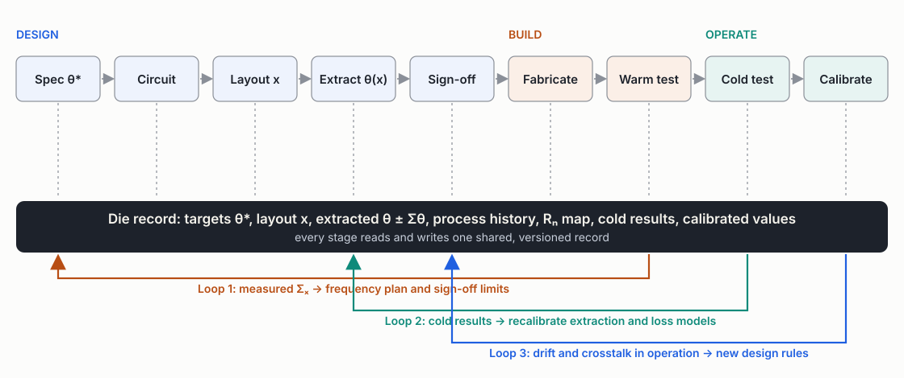
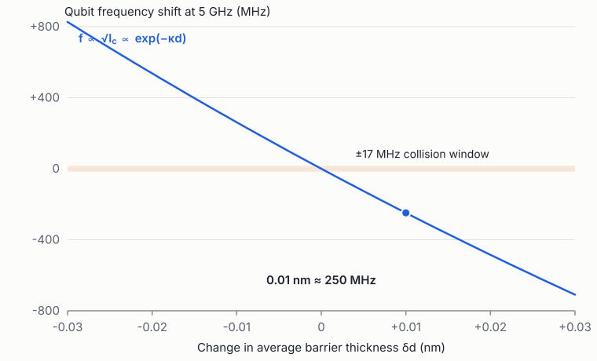
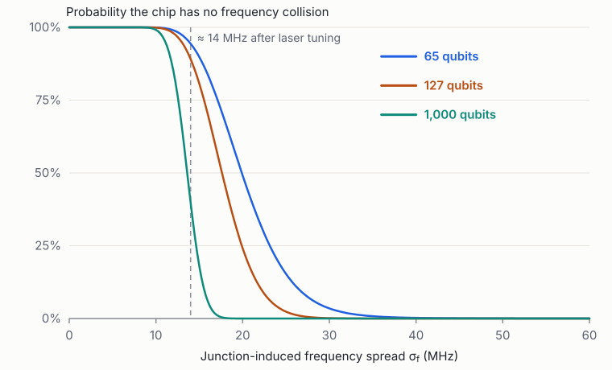
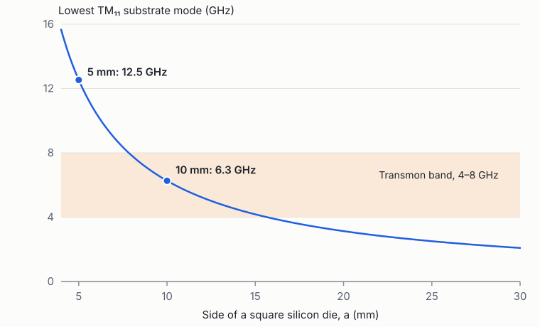
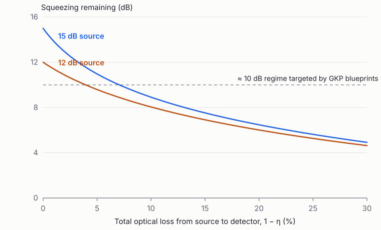
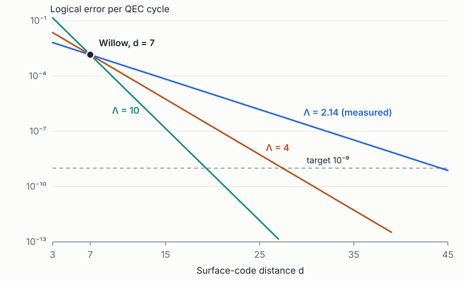
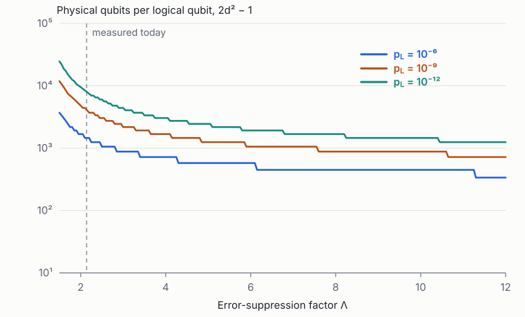

Review article · November 2026
From Laboratory to Foundry
Design automation, manufacturing feedback and error-correction-aware engineering for quantum processors: a review and research agenda
Abstract
Between 2024 and 2026 the leading quantum-hardware programmes moved their processors from university-style cleanrooms onto 200 and 300 mm production lines, and the first pure-play quantum foundries opened to outside customers. The design software did not move with them. Superconducting, trapped-ion, photonic and spin-qubit chips are still drawn with research scripts, simulated with general-purpose electromagnetic solvers, and released to fabrication without any equivalent of the process design kits, sign-off checks and statistical yield models that made fabless design possible in classical semiconductors.
This review examines that gap from both sides. We first survey the industrial landscape: which companies are betting on which qubit technologies, where their chips are made, and what the acquisitions and partnerships of 2025–2026 reveal about vertical integration. We then follow a processor through the ten stages from specification to calibrated operation. At each stage we state the governing physics and mathematics, review how existing commercial and open-source tools solve it, and identify what is missing. The central technical observation is that quantum processors are variability-limited from the first device: a qubit is only useful if its Hamiltonian parameters land inside windows of order \(10^{-3}\) relative to their targets, and junction physics makes that precision exponentially sensitive to sub-ångström fabrication variation. Quantum error correction then sets a single figure of merit, the logical-error suppression factor \(\Lambda\). It is computable in principle from design and fabrication data, and it governs how many physical qubits each logical qubit costs.
We close with seven open problems, each stated formally with its state of the art, a proposed approach and a validation criterion, and tie them to the public roadmaps of 2027–2029. Several are natural applications of modern machine learning and statistics: chance-constrained optimisation, operator-learning surrogates with calibrated uncertainty, hierarchical Bayesian yield models, Bayesian experimental design and simulation-based inference. The review ends with a reading guide for researchers entering the area.
A note on the intended reader
This review assumes graduate-level quantum mechanics: second quantisation, open-system dynamics and perturbation theory. It also assumes working fluency in modern machine learning and statistics. It does not assume familiarity with semiconductor manufacturing, electronic design automation (EDA) or superconducting-circuit engineering, so those terms are introduced where they first matter and collected in the glossary. Where the review relies on industry information rather than peer-reviewed literature, we say so. Figures are generated from the equations in the text by a script in the accompanying repository; none is digitised from a publication.
Readers who want to build that background from first principles can use the companion course Foundations of Quantum Engineering: seven books, from complex numbers and linear algebra through classical physics, quantum mechanics, quantum information, quantum photonics and quantum hardware to fabrication, yield and design automation, each with worked examples and exercises with solutions. Its last chapter maps every section of this review to the chapters that prepare for it.
1 Introduction
1.1 The industrial moment
Three events in 2024–2026 mark the transition of quantum hardware from physics experiment to manufactured product. First, the coherence of qubits made on production equipment caught up with laboratory devices. imec showed that transmons patterned with optical lithography and subtractive etching on 300 mm wafers can match the coherence of devices made by electron-beam lithography and shadow evaporation [1]. Intel showed that cryogenic probing of 300 mm spin-qubit wafers yields statistics over thousands of devices [2]. IBM moved its primary processor fabrication to the 300 mm line at Albany [3]. Second, quantum error correction crossed a threshold that matters for engineering: Google's Willow processor showed logical error falling exponentially with surface-code distance, with a suppression factor \(\Lambda = 2.14\) per distance step [4]. Third, the industry began to separate design from fabrication. IBM created Anderon, a pure-play 300 mm quantum foundry with a US$1 billion CHIPS award plus US$1 billion of its own money, open to outside customers [5, 6]. IonQ bought the US foundry SkyWater for about US$1.8 billion [7]. Photonic companies moved their designs onto GlobalFoundries and Tower production lines [8, 9].
The design layer between a qubit concept and a manufacturable wafer has not kept pace. Classical chip design solved the same separation problem in three stages. Mead and Conway's design rules let designers work without knowledge of the process [10]. SPICE and its compact device models let them predict circuit behaviour before fabrication [11]. Once the foundry model emerged, the process design kit (PDK) and the sign-off checks became the contract between a fabless designer and a fab the designer does not control. When variability came to dominate below about 100 nm, the industry added statistical timing and design-for-manufacturability methods [12, 13]. Quantum processors need all three layers at once, because they are variability-limited from the first device.
1.2 Thesis
The review develops three claims.
- The binding constraint is moving from the best device to the distribution of devices. Record coherence times are no longer what limits processor scale. What limits it is the spread of Hamiltonian parameters across hundreds to thousands of nominally identical elements, and the rare outliers in the tails of that spread. Junction physics (§4) makes this spread exponentially sensitive to atomic-scale variation.
- The data needed to manage the distribution already exists but is not connected. Every fab measures junction resistances at room temperature, many measure resonator quality factors, and some probe whole wafers cryogenically. These data rarely flow back into design models, and design intent rarely flows forward into test planning (§7, §11).
- Error correction supplies the objective function. Because roadmaps are now specified in logical qubits, a die's value is determined by its logical error rate. In principle this can be computed from a layout, the fab's variation statistics and a defect map (§9). That makes the whole flow, from design to test, optimisable against one quantity.
1.3 Scope and method
Superconducting circuits serve as the reference modality, because they have the largest number of independent chip makers, the newest foundries and the most mature design literature. Trapped ions, photonics, silicon spins, neutral atoms and topological qubits are treated comparatively in §8. We cover the physical layer, from device design to the classical control loop. We do not cover compilers, algorithms or application software, except where error correction couples them to hardware. The industrial survey draws on company releases, regulatory filings and trade press to 11 November 2026, and we flag figures that are press-reported rather than disclosed. The technical review draws on the peer-reviewed literature; key quantitative claims are cross-checked by the figure-generation script.
Notation. \(f\) denotes a frequency in Hz and \(\omega = 2\pi f\). Energies are quoted in frequency units, \(E/h\), unless stated otherwise. \(\Phi_0 = h/2e\) is the flux quantum and \(R_Q = h/4e^2 \approx 6.45\ \mathrm{k\Omega}\) the superconducting resistance quantum. Bold symbols denote vectors of design or Hamiltonian parameters: \(\mathbf{x}\) for geometry and process, \(\boldsymbol{\theta}\) for the Hamiltonian parameters extracted from it.
1.4 Structure
§2 surveys companies, technologies, deals and roadmaps. §3–§7 follow a superconducting processor through design, variability and yield, materials, packaging and control, and test and calibration. §8 extends the analysis to other modalities, and §9 treats error correction as the layer shared by all of them. §10 maps the existing tool landscape against the flow. §11 states seven open problems formally. §12 discusses commercial scope and timing, and §13 concludes. Appendices give the parameters behind each computed figure, a glossary, and a structured reading guide.

2 The industrial landscape, 2024–2026
2.1 Modalities and what is actually manufactured
The term "quantum chip" hides large differences in what is fabricated. For EDA the relevant question is which object has a layout, which physics maps that layout to a Hamiltonian, and who makes it. Table 1 summarises the answer for the six technologies with serious industrial backing.
| Modality | Manufactured object | Layout-to-Hamiltonian physics | Principal programmes | Fabricated by |
|---|---|---|---|---|
| Superconducting | Josephson circuits, resonators, couplers, multilayer wiring | Circuit QED; microwave electromagnetics; junction tunnelling | IBM, Google, Rigetti, IQM, OQC, AWS, Alice & Bob, Qolab, QuantWare | Own fabs; Anderon (IBM); SkyWater; QuantWare KiloFab |
| Trapped ion | Surface-electrode traps, increasingly with integrated photonics and electronics | Electrostatics and RF pseudopotential; optics | Quantinuum, IonQ (Oxford Ionics) | Infineon (Quantinuum); SkyWater (IonQ) |
| Photonic | Waveguide circuits, sources, switches, detectors | Linear and quantum optics; loss | PsiQuantum, Xanadu, Quandela | GlobalFoundries; Tower; Quandela in-house |
| Silicon spin | Gate-defined quantum dots in CMOS-like stacks | Cryogenic electrostatics; spin–orbit and exchange | Intel, Diraq, Quantum Motion, Equal1 | Intel 300 mm; GlobalFoundries; imec |
| Neutral atom | No qubit chip; optics, vacuum, increasingly photonic control chips | Optical tweezers; Rydberg physics | QuEra, Pasqal, Atom Computing, Infleqtion, Google | Supplier optics and lasers |
| Topological | Superconductor–semiconductor heterostructure devices | Materials growth; mesoscopic superconductivity | Microsoft | In-house |
Superconducting and spin-qubit processors are closest to classical integrated circuits: a layout is drawn, a process transfers it to a wafer, and the Hamiltonian follows from the geometry and the material parameters. Ion traps and photonic chips are also layout-defined, but the Hamiltonian is set by electrostatics and optics rather than by circuit quantisation. Neutral-atom qubits have no fabrication variation at all, since every atom is identical, and their manufacturing problems lie in optics and control. This partition determines where design automation can be sold, and §8 returns to it.
2.2 Vertical integration and the first quantum foundries
IBM and Anderon. IBM moved its processor wafers to the Albany NanoTech 300 mm facility in 2025. It says this doubles the speed of its research and development and permits ten-fold more complex chips, including the multilayer routing and long-range couplers of its Loon processor [3]. In 2026 IBM pledged more than US$10 billion over five years [14]. It also created Anderon, a standalone subsidiary operating a 300 mm quantum wafer fab. Anderon finalised a US$1 billion CHIPS Act award on 16 September 2026, which IBM matches with a further US$1 billion [5]. Anderon is positioned as an open foundry: initially superconducting wafers and supporting electronics, with other modalities to follow. Its CEO has said that wafers could reach outside customers by the end of 2026 [6]. As of November 2026 IBM is the only named customer; analysts name Rigetti, IQM and SEEQC as plausible candidates [15].
IonQ. IonQ has pursued the most aggressive vertical integration. According to its quarterly filing it completed six acquisitions in 2025 with a combined purchase price of about US$2.66 billion, mostly in stock [16]. The technically decisive one was Oxford Ionics, whose traps drive gates with on-chip microwave and electronic fields rather than focused laser beams [17]; the others included Vector Atomic and Lightsynq. In January 2026 IonQ agreed to buy SkyWater Technology, a US pure-play foundry with fabs in Minnesota, Florida and Texas, for about US$1.8 billion in cash and stock. Trade press reports that the deal closed on 31 July 2026 [7]. SkyWater continues to operate as a foundry under its own name. IonQ has since completed the purchase of Nexus Photonics, an integrated-photonics spin-out of UC Santa Barbara, and says it will offer photonic components to the wider industry through a quantum photonics foundry at SkyWater [18, 19]. Qolab, a superconducting-qubit start-up co-founded by John Martinis, announced a commercial foundry collaboration with SkyWater in September 2026 [20]. A competitor's designs will therefore be fabricated in a fab owned by IonQ.
Trapped ions without ownership. Quantinuum, listed on Nasdaq in June 2026 [21], partners rather than buys. Infineon develops and manufactures its trap chips [22], and NVIDIA processors run the real-time error-correction stack in its Helios system. Its roadmap moves from Helios to Sol (192 qubits, 2027) and Apollo (fault-tolerant, 2029). It also moves from linear race-track traps [23] to two-dimensional junctioned grids, which multiplies the electrode count.
Photonics on commercial lines. Photonic companies have used foundries from the outset. PsiQuantum's Omega chipset is made at GlobalFoundries [24, 25]. Xanadu, listed by SPAC merger in March 2026 [26], expanded work with Tower Semiconductor in February 2026 [9]. It announced wafer bonding with EV Group for heterogeneous materials in May 2026 [27], and a multi-year programme on GlobalFoundries' 300 mm line for ultra-low-loss silicon nitride and superconducting nanowire detectors in October 2026 [8]. Quandela's quantum-dot sources remain in-house [28].
Silicon spins and the Classiq acquisition. Intel fabricates spin qubits on its 300 mm lines and co-developed a 300 mm cryogenic wafer prober with Bluefors and Afore [2, 29]. On 26 October 2026 it agreed to acquire Classiq, an Israeli quantum-software company whose product synthesises optimised circuits from high-level algorithm descriptions. The price is not disclosed; press reports put it at about US$2.3 billion, and closing is expected in the first half of 2027 [30]. Intel Capital also led QuantWare's US$178 million Series B in May 2026 [31]. QuantWare sells superconducting processors to other system builders, is building a dedicated fab ("KiloFab") in Delft, and plans first shipments of its 10,000-qubit VIO-40K architecture in 2028.
Google, Microsoft and NVIDIA. Google remains fully integrated. It took in the MIT spin-out Atlantic Quantum, whose fluxonium qubits and modular stack broaden its superconducting roadmap [32], and in March 2026 it added a neutral-atom programme alongside superconducting work [33]. Microsoft's Majorana 2 device, announced in June 2026, is reported by the company to have parity lifetimes of order seconds [34]. The topological interpretation remains contested, and DARPA now has on-site access for independent testing [35]. Microsoft hedges through Atom Computing and Quantinuum. NVIDIA builds no qubits but is present in nearly every stack. Its CUDA-Q platform and NVQLink interconnect (17 processor builders at launch) put GPUs inside the control loop, and in March 2026 it added microsecond-latency real-time decoding [36, 37]. NVIDIA's venture arm holds stakes in Quantinuum, PsiQuantum, QuEra, Alice & Bob and Riverlane [38].
Validation. DARPA's Quantum Benchmarking Initiative advanced Atom Computing, Diraq, IBM and IonQ to its final Stage C in October 2026, joining Microsoft and PsiQuantum, which entered through the predecessor programme [39]. Stage C is independent verification of hardware and system designs. It rewards teams with a documented, credible path to manufacture.
| Acquirer | Target | Status | Value | Layer acquired |
|---|---|---|---|---|
| IonQ | Oxford Ionics; Vector Atomic; Lightsynq; others | Closed 2025 | $2.66 bn (six deals) | Trap technology; sensing; networking |
| IonQ | SkyWater Technology | Closed Jul 2026 (reported) | ≈ $1.8 bn | Foundry |
| IonQ | Nexus Photonics | Completed Sep 2026 | n/d | Integrated photonics |
| IonQ | Elisity | Announced Oct 2026 | up to $1.3 bn | Network security (adjacent) |
| Intel | Classiq | Agreed Oct 2026; close H1 2027 | ≈ $2.3 bn (reported) | Algorithm-level design software |
| Atlantic Quantum | Oct 2025 | n/d | Fluxonium hardware | |
| D-Wave | Quantum Circuits Inc. | Early 2026 | ≈ $550 m (reported) | Gate-model hardware |
| IBM | Anderon (spin-out) | 2026 | $2 bn committed | Foundry |
Sources for Table 2: [5, 7, 16, 18, 19, 30, 32, 40]. Public listings in 2026 (Quantinuum, Xanadu, Infleqtion, IQM) supplied further capital [41, 42].
2.3 Public roadmaps
| Year | Announced milestones | Implied requirement on the design flow |
|---|---|---|
| 2026 | Anderon and SkyWater accept outside quantum designs; IBM Kookaburra (first QEC-enabled module) | Foundry design kits and sign-off for outside customers |
| 2027 | IBM Cockatoo (entangled QEC modules); Quantinuum Sol; Microsoft–Atom Computing Magne (~50 logical) | Multilayer, multi-module layouts; 2D trap routing |
| 2028 | QuEra Libra, 256 logical on >10,000 atoms; QuantWare VIO-40K shipments | Chip-scale extraction and yield at \(10^4\) qubits |
| 2029 | IBM Starling, 200 logical qubits; Quantinuum Apollo | Acceptance on logical, not physical, metrics |
| 2030–33 | Google commercial target; DARPA utility-scale goal | Volume manufacture with complete statistical sign-off |
Sources: [3, 31, 33, 35, 43]. Designs for the 2028 machines will be drawn during 2027, which sets the practical deadline for any tool that is to matter for them.
2.4 Reading the pattern
Capital has flowed to the two ends of the stack. At the bottom, companies have secured wafer capacity: IonQ–SkyWater, IBM–Anderon, QuantWare's KiloFab, Xanadu on GlobalFoundries. At the top, they have secured the software users touch: Intel–Classiq, NVIDIA's CUDA-Q, and the control and calibration vendors. Neither acquisitions nor venture rounds have targeted the layer that classical semiconductors call EDA: the tools that turn design intent into a manufacturable layout and verify that it will work. Quarterly venture tables for 2026 list large rounds for quantum hardware makers and for AI-driven classical chip design, and none that we could identify as quantum design automation [44]. That is an absence of evidence from public sources, not proof of absence. It is, however, consistent with the technical survey in §3–§7, which finds that the design layer is still largely made up of open-source research tools and in-house scripts.
3 From geometry to Hamiltonian: superconducting circuit design
3.1 Circuit quantisation and the transmon
A superconducting processor is a network of capacitors, inductors and Josephson junctions, quantised in the node-flux representation [45–47]. With node fluxes \(\boldsymbol{\Phi}\), the Lagrangian of a lumped network is
where \(\mathbf{C}\) is the Maxwell capacitance matrix, \(\mathbf{L}^{-1}\) the inverse inductance matrix and \(\Phi_{b(j)}\) the branch flux across junction \(j\). A Legendre transform gives \(H = \tfrac12 \mathbf{Q}^{\mathsf T}\mathbf{C}^{-1}\mathbf{Q} + U(\boldsymbol\Phi)\). Every term in the Hamiltonian is a functional of the geometry through \(\mathbf{C}\) and \(\mathbf{L}\), and of the process through \(E_J\). That is what makes superconducting design an EDA problem.
For the transmon, a single junction shunted by a large capacitance [48],
In the regime \(E_J/E_C \sim 50\text{–}100\), the low-lying spectrum is that of a weakly anharmonic oscillator:
The charge dispersion of level \(m\) is suppressed exponentially [48],
which is why the transmon tolerates charge noise. The price is a small anharmonicity, typically \(\alpha/2\pi \approx -200\) to \(-340\) MHz at \(f_{01} \approx 4\text{–}6\) GHz. A small \(\alpha\) is what makes frequency crowding (§4) the dominant scaling problem. Fluxonium, which adds a large superinductance, trades this regime for much larger anharmonicity and lower frequency [49, 50]. That is relevant to Google's absorption of Atlantic Quantum, because fluxonium has different sensitivities and needs different cell libraries.
3.2 The parameter vector a designer must hit
A multi-qubit device is described, to the accuracy that matters for gates, by an effective Hamiltonian
with readout resonators \(b_i\) coupled to a Purcell-filtered feedline [51, 52]. The designer controls the vector \(\boldsymbol\theta = (\omega_i, \alpha_i, g_{ij}, \omega_{r,i}, g_{r,i}, \kappa_i)\). Performance depends on derived quantities. In the dispersive regime \(|\Delta_{ir}| = |\omega_i-\omega_{r,i}| \gg g_{r,i}\), the readout shift and the Purcell decay are
and the static \(ZZ\) interaction between directly coupled transmons with detuning \(\Delta = \omega_1 - \omega_2\) is
These expressions define the design tension. Fast cross-resonance gates [53, 54] need \(g\) large and \(\Delta\) inside the "straddling" window \(|\Delta| \lt |\alpha|\). Low crosstalk needs \(\zeta\) small, which pushes the other way. Fast readout needs large \(\chi\) and \(\kappa\), which raise Purcell loss. Tunable couplers [55, 56] break the tension by making \(g\) controllable and cancelling static \(\zeta\), at the cost of a flux line per coupler and a new sensitivity to flux noise.
The sensitivity that matters most for manufacture follows from (3):
A 1% error in either the junction critical current or the island capacitance moves a 5 GHz qubit by roughly 25 MHz. That is comparable to, or larger than, the frequency-collision windows of §4. The design problem is therefore not only to choose \(\boldsymbol\theta\) but to choose it so that the manufactured distribution of \(\boldsymbol\theta\) satisfies the constraints.
3.3 Extraction: three formulations
The map \(\mathbf{x} \mapsto \boldsymbol\theta\) from layout and stack to Hamiltonian is computed by one of three families of method.
Quasi-static lumped models. Solve Laplace's equation \(\nabla\!\cdot(\varepsilon\nabla\phi)=0\) for the capacitance matrix, add geometric and kinetic inductances, and insert the result into (1). This is accurate when structures are small compared with the wavelength (about 24 mm at 5 GHz on silicon). It is the basis of Q3D-style extraction and of the modular "lumped oscillator model" [57]. Its weakness is distributed elements, such as resonators, long couplers and package modes.
Full-wave eigenmodes with energy participation. Replace each junction by its linear inductance \(L_J = (\Phi_0/2\pi)^2/E_J\) and solve the source-free Maxwell eigenproblem
for the linearised modes \(\omega_m\). The energy-participation ratio \(p_{mj}\), the fraction of mode \(m\)'s inductive energy stored in junction \(j\), then determines the nonlinear Hamiltonian. For a single junction [58],
and to leading order \(\alpha_m \simeq p_m^2 \hbar\omega_m^2/8E_J\) and \(\chi_{mn} \simeq p_m p_n \hbar\omega_m\omega_n/4E_J\). EPR is accurate for distributed structures and is the method behind pyEPR and the most common HFSS-based workflows.
Impedance (black-box) quantisation. Compute the admittance \(Y(\omega)\) seen by the junction port. Its zeros give the modes, with effective impedances \(Z_p = 2/(\omega_p\,\mathrm{Im}\,Y'(\omega_p))\) [59]. Exact network synthesis makes the procedure rigorous for lossy, multiport environments [60]. This formulation is natural for model-order reduction, because a pole–residue fit of \(Y(\omega)\) is what reduced-order models produce.
All three are implemented. Commercial solvers (Ansys HFSS and Q3D, now part of Synopsys; COMSOL; Sonnet; Keysight's QuantumPro EM) supply the field solutions [61]. Open-source projects supply the quantum layer and increasingly the solver too: scqubits, QuCAT and SQcircuit at the Hamiltonian level [62–64], QuTiP for dynamics [65], Quantum Metal (formerly Qiskit Metal) and IQM's KQCircuits for parametrised layout [66, 67], AWS Palace as a scalable finite-element solver [68], and SQDMetal, which chains Quantum Metal, Gmsh and Palace [69]. SQuADDS adds a database of simulated and measured designs [70]. The physics is settled. What is not settled is accuracy control and scale.
3.4 Accuracy requirements and their numerical cost
From (8), holding a frequency to \(\pm 10\) MHz requires relative errors in \(C_\Sigma\) and \(L_J\) of about \(4\times10^{-3}\). Two numerical facts make that harder than it looks. First, the electric field at the edge of a thin superconducting film diverges as \(r^{-1/2}\), so quantities that integrate \(|\mathbf{E}|^2\) near edges converge slowly under uniform mesh refinement and need adaptive or graded meshes [71]. This matters even more for surface-loss participation (§5). Second, kinetic inductance of thin films and the effective permittivity of the substrate are known only to a few percent. That model-form uncertainty is comparable to the target and cannot be reduced by refining the mesh. In current practice convergence is judged by eye, and extracted parameters are reported without uncertainty.
3.5 The scaling wall
A processor spans five decades of length: junction leads of about 0.1 µm, coplanar gaps of about 10 µm, qubit pads of a few hundred µm, resonators of several mm and a die of 10–20 mm. The die is comparable to the guided wavelength, so a single lumped model is invalid at die scale. Meanwhile the number of finite-element unknowns grows roughly as \(V/h^3\). Even with aggressive grading, a full-wave model of a 100-qubit die with its package runs to \(10^8\)–\(10^9\) unknowns, and a sparse direct solve in three dimensions costs \(O(N^2)\) time. Engineers therefore cut chips into pieces by hand and assume the pieces do not interact.
Classical EDA solved the analogous problem for interconnect with hierarchical extraction and passive model-order reduction. Krylov-subspace projection (PRIMA) preserves passivity [72]; vector fitting yields pole–residue models from sampled responses [73]; the general theory is in [74]. Domain decomposition couples the pieces through their interfaces [75]. Partition the die into cells \(c\) with interior unknowns \(\mathbf{u}_c\) and interface unknowns \(\mathbf{u}_\Gamma\). Eliminating the interiors gives the Schur complement
where each \(\mathbf{A}_{cc}^{-1}\) can be precomputed once per parametrised cell type and compressed. A processor contains a handful of cell types repeated hundreds of times, so the one-off cost of a cell library is amortised and the die-level cost becomes approximately linear in cell count. Two conditions are essential and are not met by current quantum tools. The reduced models must be passive, since a non-passive surrogate can predict unphysical gain and wrong mode frequencies. And the truncation, both of the reduced models and of weak long-range couplings, must carry an a posteriori error estimate that propagates into the uncertainty of \(\boldsymbol\theta\).
3.6 Inverse design and the role of learning
Designers actually need the inverse map: given targets \(\boldsymbol\theta^*\) with tolerances, find \(\mathbf{x}\). Two ingredients make this tractable. The first is adjoint sensitivity. For the discretised generalised eigenproblem \(\mathbf{A}(\mathbf{x})\mathbf{e} = \lambda\mathbf{B}(\mathbf{x})\mathbf{e}\) with \(\lambda=\omega^2\),
so the full gradient \(\partial\omega/\partial\mathbf{x}\) costs no more than one solve. That gradient is also the Jacobian \(\mathbf{J}=\partial\boldsymbol\theta/\partial\mathbf{x}\) needed for statistical sign-off in §4. The second ingredient is a surrogate. Over the parameter range of a cell, the forward map is smooth and expensive, which is the setting for Gaussian-process regression [76] and Bayesian optimisation [77]. Menke et al. used such methods to discover coupler circuits automatically [78]. For field-level surrogates, operator learning [79, 80] and mesh-based graph networks [81] are the natural architectures, and physics-informed losses can enforce the governing equations [82].
Where learning helps and where it does not. A learned surrogate is useful for sign-off only if its error is bounded on the distribution of designs actually submitted. Two properties matter more than raw accuracy. The first is calibrated uncertainty: conformal prediction [83] gives distribution-free coverage guarantees given exchangeable calibration data, which suits a foundry's growing library of measured cells. The second is detection of distribution shift, when a new design or a new foundry leaves the training support. A surrogate without both should be used to propose designs, never to approve them. That distinction mirrors classical EDA, where fast estimators drive placement and only the slow, accurate extractor signs off.
4 Variability, frequency allocation and yield
4.1 Junction physics: why sub-ångström variation matters
The Ambegaokar–Baratoff relation ties the critical current of a superconductor–insulator–superconductor junction to its normal-state resistance [84]. At \(T \ll T_c\),
with \(\Delta\) the superconducting gap (about 180 µeV for thin-film aluminium, so \(\Delta/h \approx 44\) GHz). The resistance \(R_n\) can be measured at room temperature in milliseconds, which is what makes warm screening of qubit frequencies possible. The junction is an aluminium-oxide tunnel barrier about 1–2 nm thick. For a rectangular barrier of height \(U\), thickness \(d\) and area \(A\), the WKB tunnelling probability gives [85]
so that
A change of 0.01 nm in the mean barrier thickness, a few percent of one atomic layer, changes \(I_c\) by about 10% and moves a 5 GHz qubit by about 250 MHz (Figure 2). Real barriers are amorphous and have a distribution of local thicknesses, and transport is dominated by the thinnest regions, so the effective \(\kappa\) differs from the idealised value. The exponential sensitivity, however, is robust, and it is the root of the problem.

Area variation adds a second, geometric term. By analogy with transistor mismatch, where threshold-voltage spread scales as \(\sigma \propto 1/\sqrt{A}\) for uncorrelated local fluctuations [86], small junctions are intrinsically less reproducible. Measured wafer-scale resistance spreads are of order a few percent, with a smooth gradient across the wafer plus a local random component [87]. Junction resistance also drifts for days after fabrication as the oxide relaxes. The process matters: shadow-evaporated Dolan-bridge junctions [88] are flexible but sensitive to resist geometry, while the subtractive 300 mm flows now entering production trade flexibility for uniformity [1].
Combining (15) with a resistance spread \(\sigma_R/R\) of 2–4% gives \(\sigma_f/f \approx 1\text{–}2\%\), or \(\sigma_f \approx 50\text{–}100\) MHz at 5 GHz. Collision windows are a few to a few tens of MHz. As fabricated, fixed-frequency transmons therefore miss their targets by more than the tolerance. Post-fabrication tuning or tunable elements are mandatory, not optional.
4.2 The frequency-collision model
For fixed-frequency transmons driven by cross-resonance, IBM identified a set of forbidden frequency relations between a control qubit \(j\), a target \(k\) and their spectators [89, 90]. They include near-degeneracy \(|f_j - f_k| \lt \delta_1\); near-resonance of the control's two-photon \(0\to2\) transition with the target, \(|f_j - f_k - \alpha/2| \lt \delta_2\); near-resonance of a \(1\to2\) transition, \(|f_j - f_k - \alpha| \lt \delta_3\); the requirement that the pair lie in the straddling regime \(|f_j-f_k| \lt |\alpha|\); and further conditions among spectators that share a control. Window widths \(\delta_k\) of a few to a few tens of MHz are set by the gate time and the tolerated error.
Let \(\Delta_e = f_i - f_j\) be the detuning on coupler edge \(e\), with design value \(\mu_e\) and random fabrication error. If frequency errors are independent Gaussians of standard deviation \(\sigma_f\), then \(\Delta_e \sim \mathcal N(\mu_e, 2\sigma_f^2)\), and the probability that edge \(e\) falls into window \(k\) (centre \(c_k\), half-width \(\delta_k\)) is
Treating edges as independent, the probability that a chip with edge set \(E\) has no collision is
Figure 3 evaluates (17) for heavy-hexagon edge counts at 65, 127 and 1,000 qubits. The yield curve is a cliff whose position moves left as the chip grows. In this model, at \(\sigma_f = 14\) MHz (the order of the post-anneal precision IBM reports [90, 91]) the zero-collision yield is about 94% at 65 qubits, 89% at 127 and 40% at 1,000. At 20 MHz it is 49%, 24% and essentially zero.

Two features of (17) deserve emphasis for a statistically minded reader. First, the expected number of collisions is \(\lambda_{\mathrm{coll}} = \sum_{e,k}p_{e,k}\), which is linear in edge count. Holding yield fixed while the chip grows tenfold requires each \(p_{e,k}\) to fall tenfold. Because \(p_{e,k}\) is a Gaussian tail probability, a tenfold reduction needs only a modest reduction in \(\sigma_f\), but it is entirely a statement about the tails. Second, those tails are exactly where the Gaussian model is least trustworthy. Outlier junctions from particles, resist defects or oxide inhomogeneity produce heavy tails, and spatial correlation couples neighbouring edges. A yield model for 1,000-qubit chips must therefore be fitted to the measured tail behaviour of a specific line, not assumed.
4.3 Frequency allocation as optimisation
Published approaches choose a small set of frequency classes and assign them to the lattice so that the nominal pattern avoids all windows. Morvan et al. cast allocation as an optimisation over the lattice [92], and later work studies mitigation strategies [93]. These methods generally assume a single \(\sigma_f\) and fix the pattern before considering post-fabrication tuning. A formulation that uses what a foundry actually knows is a chance-constrained programme:
where \(\mathcal C\) is the union of forbidden regions, \(\mathbf{m}(\mathbf{r})\) and \(\boldsymbol\Sigma_f(\mathbf{r},\mathbf{r}')\) are the spatial mean and covariance of fabrication error at die positions \(\mathbf{r}\), and \(\mathbf{s}(\cdot)\) is the post-fabrication trim policy (below). Chance constraints of this kind are non-convex in general, since \(\mathcal C\) is a union of disjoint slabs. They are nonetheless tractable by sample-average approximation, which replaces the probability with an empirical frequency over sampled \(\boldsymbol\delta\) and solves the resulting mixed-integer programme [94], or by convex conservative approximations [95]. The spatial covariance matters because collisions only involve neighbours, and neighbouring junctions are positively correlated, which reduces the variance of their difference. Using a fitted \(\boldsymbol\Sigma_f\) instead of an isotropic \(\sigma_f\) is therefore not a refinement; it can change the optimal pattern.
4.4 Post-fabrication trimming
IBM adjusts individual junctions by laser annealing, which raises \(R_n\) and so lowers \(f\) by a controlled amount [90, 91]. The move is one-sided and bounded. Given predicted frequencies \(\hat{\mathbf f}\) from warm resistance measurements, the trim plan solves
an integer programme on the coupling graph. With uncertainty in \(\hat{\mathbf f}\), the objective becomes the expected number of collisions under the posterior of §4.5. IBM's results show that the physics works on one company's line. They are not yet a method that a foundry customer can apply without that company's process knowledge.
4.5 A hierarchical model for warm-to-cold prediction
Semiconductor manufacturing models wafer-level variation as a smooth spatial trend plus nested random effects, and estimates it by kriging, which is Gaussian-process regression [13, 76]. For junction \(i\) on die \(d\) of wafer \(w\),
with a Student-\(t\) residual to accommodate the heavy tails discussed above, and with process covariates \(\mathbf z_w\) (oxidation pressure and time, resist thickness). Through (13) and (3) the posterior on \(R_{n,i}\) induces a posterior on each cold frequency, \(p(f_i\mid\mathcal D)\). The same model supplies \(\boldsymbol\Sigma_f\) for (18), the uncertainty for (19), and a known-good-die rule: package die \(d\) only if \(\Pr(\text{no collision}\mid\mathcal D) \ge P_{\min}\). This is the yield-management layer that classical fabs buy as a product [96, 97]. No quantum equivalent exists.
4.6 Statistical sign-off
Classical design moved from corner-based to statistical static timing analysis when variability became comparable to the margins [12]. The quantum analogue is direct. Let \(\mathbf x\sim\mathcal N(\mathbf x_0,\boldsymbol\Sigma_x)\) describe geometric and junction variation as characterised by the foundry. To first order,
with \(\mathbf J\) obtained by the adjoint method of (12). A layout passes sign-off if
The linearisation fails exactly where it matters most, in the tails near collision boundaries. A practical implementation therefore needs importance sampling or subset simulation for the rare-event probability, using the surrogate of §3.6 with conformal error bounds to keep the cost manageable.
5 Materials, interfaces and the coherence budget
5.1 Participation-weighted loss
The energy-relaxation rate of a transmon decomposes into independent channels:
Here \(p_i\) is the fraction of electric energy stored in dielectric region \(i\): the bulk substrate, and the nanometre-thick metal–substrate (MS), substrate–air (SA) and metal–air (MA) interface layers. \(\tan\delta_i\) is that region's loss tangent [98–101]. The participation is a property of the geometry, and the loss tangent a property of the process. For a typical interface layer, \(p\sim10^{-4}\) and \(\tan\delta\sim10^{-3}\), so \(Q^{-1}\sim10^{-7}\) and \(T_1 = Q/\omega \approx 0.3\) ms at 5 GHz. Interfaces that hold one part in \(10^4\) of the field energy dominate coherence.
(23) explains the evolution of transmon geometry. Wider gaps and larger pads dilute the surface field, at the cost of footprint and stronger coupling to spurious modes. It also explains why materials changes can dominate design changes: tantalum films, by lowering the MA and MS loss tangents, raised transmon \(T_1\) above 0.3 ms and then toward 0.5 ms [102, 103].
5.2 Two-level systems and the stochasticity of \(T_1\)
Interface loss is dominated by two-level systems (TLS), atomic-scale tunnelling defects in amorphous oxides [104]. In the standard tunnelling model their contribution saturates with power and temperature:
which is how resonator measurements separate TLS loss from other channels [105]. Individual near-resonant TLS also diffuse spectrally, so a qubit's \(T_1\) fluctuates by large factors on timescales of minutes to hours [106]. For yield and for error correction this matters more than the mean: \(T_1\) is a random process, and a die's coherence is a distribution over both space and time. Correlated losses from quasiparticles generated by ionising radiation produce bursts of errors across a chip [107, 108]. These violate the independent-noise assumptions of most error-correction analyses.
5.3 From recipe to coherence
Reviews of materials for quantum hardware [109–111] converge on the same diagnosis: process steps (surface cleans, etch chemistry, film deposition, ambient exposure) set the interface loss tangents, and these are measured inconsistently across labs. Two things are missing from the design flow. The first is a foundry-published set of interface loss tangents \(\{\tan\delta_i\}\), measured on standard resonator test structures and versioned with the process. These would be the quantum equivalent of the device-parameter tables in a classical PDK. The second is a design-time tool that computes \(\{p_i\}\) for any layout, with the singular-field accuracy of §3.4, and reports a \(T_1\) budget by channel. Together they would let designers trade footprint against coherence knowingly, and give the fab a quantitative target.
Learning the map from process parameters and inline metrology (film resistivity, X-ray photoelectron spectroscopy, cross-sectional TEM, resonator \(Q\)) to \(\tan\delta_i\) is a multi-fidelity regression problem with few, expensive, confounded samples. Process recipes are chosen deliberately, not randomly, so a naive regression conflates correlation with effect. This is a setting for designed experiments and Bayesian modelling with physical priors, not for large unsupervised models. It is also the slowest of the problems in this review to commercialise, because it needs a foundry's data and its cooperation.
6 Packaging, three-dimensional integration and wiring
6.1 The package is a microwave cavity
A silicon die between conducting surfaces supports box modes. For a dielectric slab of side lengths \(a, b\) and small height, with ideal walls, the lowest modes are at
A 5 mm research die has its first mode near 12.5 GHz, safely above the qubits. A 10 mm die puts it at 6.3 GHz, inside the transmon band, and larger dies place many modes there (Figure 4). A qubit detuned by \(\Delta_m\) from a mode of linewidth \(\kappa_m\) with coupling \(g_m\) decays into it at \(\Gamma \approx \kappa_m(g_m/\Delta_m)^2\), the same Purcell form as (6). This is why scaling beyond a few tens of qubits forced the move to through-silicon vias [112] and bump-bonded multi-chip stacks [113]. Grounded vias at pitch \(p \ll \lambda/2\) divide the substrate into cells whose modes lie far above the qubit band. Careful package design is itself a substantial literature [114].

Three-dimensional integration adds design rules with no planar counterpart: bump pitch and keep-out zones, via density, the spacing of flux-trapping holes in ground planes, and the mismatch in thermal contraction between bonded dies cooled from 300 K to 10 mK. IBM's Loon processor adds multiple low-loss routing layers for the long-range couplers its qLDPC codes need (§9). Modular roadmaps (IBM's Cockatoo, Google's Atlantic Quantum stack, photonic and ion interconnects) add inter-module links whose loss and crosstalk must be modelled alongside the chip. Today the check that no package mode lies within \(\Delta_{\min}\) of any qubit frequency is a manual eigenmode study per package. It should be an automated sign-off rule, run against the qubit frequency list.
6.2 Wiring: a heat budget and a noise budget
Each control or readout line conducts heat and dissipates signal power in its attenuators. At every refrigerator stage \(s\),
where available cooling power falls from about a watt at 4 K, to tens of milliwatts at the still (about 0.8 K), to about a milliwatt at 100 mK, and to tens of microwatts at the 10–20 mK mixing chamber, for a large commercial dilution refrigerator. Each line also carries thermal noise from room temperature, where a 5 GHz mode holds \(\bar n(300\,\mathrm K) = (e^{hf/k_BT}-1)^{-1} \approx 1.25\times10^3\) photons. An attenuator of power ratio \(A\) at temperature \(T_s\) maps
so roughly 60 dB of attenuation, distributed across stages, is needed to bring the residual population well below \(10^{-3}\) [115, 116]. Residual photons in a readout resonator dephase the qubit at [117]
More attenuation means less noise but more heat. Krinner et al. worked through these budgets for a cryogenic setup at the 100-qubit scale [115]. Every lab repeats the analysis in a spreadsheet; it could be generated from the chip netlist.
The long-term answer is classical control electronics inside the refrigerator: cryogenic CMOS [118–121] or single-flux-quantum logic [122]. Google's 28 nm cryo-CMOS controller dissipated under 2 mW at 3 K [120]. A power of 1–2 mW per qubit therefore allows about a thousand qubits per watt at 4 K, before multiplexing. Cryogenic CMOS needs transistor models valid near 4 K. Cadence, Semiwise and sureCore have produced such models for GlobalFoundries' 22FDX process in the Spectre simulator [123], and Cadence reports Equal1 designing a silicon quantum processor with its standard flow [124]. Superconducting digital logic has its own design-automation tradition [125, 126]. The incumbents are absorbing this layer. What remains open is the system-level step: generating the line plan, attenuation plan, stage heat loads and per-qubit dephasing budget directly from the chip design, and co-simulating qubit and controller across vendors. Reilly's review frames the broader quantum–classical interface problem [127].
7 Test, characterisation and calibration
7.1 What is measured
The figures of merit are standard [52, 128]: energy relaxation \(T_1\); dephasing \(T_2\), with \(1/T_2 = 1/2T_1 + 1/T_\varphi\); gate error from randomised benchmarking; and readout assignment fidelity. Randomised benchmarking fits the decay of sequence fidelity over random Clifford sequences of length \(m\) [129]:
which makes the error per Clifford \(r\) insensitive to state-preparation and measurement errors. Assignment fidelity is \(F_a = 1 - \tfrac12[P(1\mid0)+P(0\mid1)]\).
7.2 Cold test is the scarce resource
A dilution refrigerator takes a day or more to cycle and holds a handful of dies, so full characterisation is slow. Intel's 300 mm cryogenic prober, developed with Bluefors and Afore, collects statistics on thousands of spin-qubit devices per wafer [2]. Bluefors now sells such probers commercially, operating below 2 K on wafers up to 300 mm, and CEA-Leti and Fraunhofer IAF have installed them [29]. At 1–2 K, however, a superconducting qubit's coherence cannot be measured. Superconducting lines therefore rely on warm proxies (junction resistance, resonator response at higher temperature) and must decide which few dies deserve a full cooldown. Because \(T_1\) fluctuates in time [106], a single measurement of a die is a sample, not a characterisation.
Framed statistically, test planning is Bayesian experimental design [130, 131]. Choose the next measurement to maximise expected information about the die's parameters per unit of instrument time:
stopping when the posterior probability that the die meets specification leaves an indecision band, \(\Pr(\text{good}\mid\mathbf y)\notin(p_{\mathrm{lo}},p_{\mathrm{hi}})\). The same measurements can recalibrate the simulators. The extraction and loss models of §3 and §5 have parameters \(\boldsymbol\phi\) (effective permittivities, kinetic inductance, interface loss tangents) that are imperfectly known. Cold data constrain them through \(p(\boldsymbol\phi\mid\mathbf y)\propto p(\mathbf y\mid\boldsymbol\phi)p(\boldsymbol\phi)\). When the likelihood is available only through an expensive simulator, this is simulation-based inference [132]. Over successive wafers, the bias between predicted and measured frequency should shrink. That is the measurable sign that the flow is learning.
7.3 Calibration
A processor of \(N\) qubits and \(E\) couplers carries on the order of ten calibrated parameters per element: frequencies, pulse amplitudes and phases, DRAG coefficients, readout settings and coupler biases. That is about \(10^4\) parameters at \(N=1000\). DRAG is the canonical example. Adding a derivative component on the quadrature channel, \(\Omega(t) = \Omega_x(t) + i\beta\,\dot\Omega_x(t)/\alpha\), cancels leakage to the second excited state, and \(\beta\) must be tuned per qubit [133]. Google formalised calibration as a directed acyclic graph of experiments with cheap checks, re-running a node only when its check or a dependency fails [134]. Bayesian and online Hamiltonian learning [135] and integrated model-based toolsets [136] reduce the number of experiments.
Calibration is the best-served stage of the flow commercially. Quantum Machines, Qblox, Zurich Instruments (whose ZQCS platform, launched in March 2026, packs more than a thousand channels per rack [137]), Keysight, Q-CTRL, Qruise and QuantrolOx all offer automation. With error correction, classical decoding joins the loop and must keep pace with syndrome generation (§9). A design-tool company has one distinctive contribution here: the two-way link to design. Seeding calibration from the extracted model starts the search inside tolerance, and returning fitted values updates the model.
8 Other modalities through the same lens
For each modality we ask the same three questions as for superconducting circuits: what maps layout to Hamiltonian, what varies in manufacture, and what is missing from the tool chain.
8.1 Trapped ions
A surface-electrode trap holds ions tens of microns above a chip [138]. A radio-frequency drive at \(\Omega\) produces a time-averaged pseudopotential, and static voltages \(V_k\) on control electrodes position and move the ions [139]:
where \(\phi_k\) is the basis potential of electrode \(k\) at unit voltage and \(q_M\) the Mathieu parameter. Because the problem is linear in \(V_k\), transport waveforms follow from regularised least squares,
with \(\mathbf A\) collecting the basis potentials and their derivatives at the target ion positions. House's analytic model of planar electrodes gives a fast and accurate approximation to \(\phi_k\) [140], a ready-made surrogate. Electric-field noise from the surface heats the ion's motion at a rate that scales roughly as \(d^{-4}\) with ion–surface distance [141], which sets a floor on trap size.
The industrial change is scale and ownership. The quantum CCD architecture moves ions between zones [23, 142, 143]. Two-dimensional junctioned traps for Quantinuum's Sol and Apollo, made by Infineon, need hundreds to thousands of electrodes with multilayer routing beneath the surface [144]. Integrated waveguides for addressing [145, 146] add photonic design rules. Microwave and electronic gates [17, 147], the basis of Oxford Ionics and now IonQ, turn the trap into something much closer to a conventional mixed-signal chip, with current-carrying structures whose near fields set gate fidelity. The missing tools are parametrised electrode cells, automatic routing of electrode lines, rule decks for trap processes at Infineon and SkyWater, and optimisation of geometry and waveforms together (Problem 7 in §11).
8.2 Photonics
In photonic architectures the dominant error is a lost photon. Transmissions multiply along a path \(\mathcal P\), so losses in decibels add: \(\eta_{\mathcal P} = \prod_{i\in\mathcal P}\eta_i = 10^{-\sum_i\ell_i/10}\). For continuous-variable architectures based on Gottesman–Kitaev–Preskill (GKP) states [148, 149], loss replaces part of a squeezed quadrature with vacuum noise. In shot-noise units,
which caps the attainable squeezing at \(-10\log_{10}(1-\eta)\) regardless of source quality. Taking the roughly 10 dB regime targeted by published blueprints as a proxy requirement, a 15 dB source tolerates only about 7% total loss from source to detector (Figure 5). For fusion-based schemes with single photons [150, 151], thresholds on photon loss per fusion are likewise percent-level. Either way, each of the many components on a path is held to fractions of a percent. Demonstrations include Xanadu's Borealis and Aurora [152, 153] and PsiQuantum's Omega platform [24]; the broader field is reviewed in [154].

Photonic design automation is mature for classical silicon photonics, with component solvers, circuit simulators and foundry kits [155]. Quantum use differs in its statistical demands. The requirement is \(\Pr\big(\min_{\mathcal P}\eta_{\mathcal P}\ge\eta_{\min}\big)\ge Y_{\min}\) over the foundry's measured component-loss distributions, verified for every path in a circuit of thousands of components. Heterogeneous integration (lithium niobate modulators, superconducting nanowire detectors) also falls outside standard kits. Quandela's approach differs again: deterministic quantum-dot sources [156, 157] whose spectral inhomogeneity makes source selection and matching a yield problem.
8.3 Silicon spin qubits
A spin qubit is a single electron or hole confined beneath gate electrodes [158, 159]. Its design is cryogenic electrostatics: the coupled Poisson and Schrödinger problem
solved at temperatures where conventional device simulators fail to converge. Nanoacademic's QTCAD was built for this [160, 161]. The qubit frequency is \(hf = g\mu_BB\), about 28 GHz per tesla for \(g\approx2\). Two-qubit gates use exchange, \(J\approx 4t^2/U\), with tunnel coupling \(t\) exponential in the barrier-gate voltage. That exponential is the weakness: low-frequency charge noise with spectrum \(S_V(f)\propto1/f\) maps to gate error through \(\partial J/\partial V\). The manufacturing advantage is compatibility with CMOS lines [162, 163], and fidelities have crossed surface-code thresholds [164]. The open problem is variability: sharing control lines across many dots requires threshold voltages uniform to well below the charging energy. Wafer-scale cryogenic data [2] are exactly what a compact model of a quantum dot needs, in the way SPICE models are fitted to transistor data [11]. No such model exists in any PDK. Classical EDA fits spin qubits best, and the opportunity there is to complement Cadence and Synopsys, not to replace them.
8.4 Neutral atoms
Neutral-atom processors hold atoms in optical tweezers and entangle them through Rydberg interactions [165]. Gate fidelities above 99.5% [166], coherent transport of entangled arrays [167] and logical-level algorithms on up to 48 logical qubits [168] have been shown. Because atoms are identical, there is no qubit fabrication variation, and the layout-to-Hamiltonian tool chain of §3–§4 does not apply to the qubits. Two openings remain. Reconfigurable connectivity makes neutral atoms natural hosts for qLDPC codes [169], so the QEC tooling of §9 applies fully. And the optics that steer the tweezers are migrating onto photonic integrated circuits, which do need design and verification.
8.5 Topological qubits
Majorana-based qubits would store information non-locally and protect it topologically [170]. Microsoft's devices pass a "topological gap protocol" [171] and have shown interferometric single-shot parity measurement [172]. The company reports parity lifetimes of order seconds for Majorana 2 [34]. Whether these devices realise topological protection remains disputed, and DARPA's on-site evaluation is under way [35]. For design automation this is a late-stage account. If validated, gate-defined nanowire devices would need the same cryogenic electrostatic simulation as spin qubits.
9 Error correction: the layer every stack shares
Error correction is largely independent of physical modality. A code, a decoder and a syndrome-extraction schedule see only error rates, connectivity and timing. That makes it the one layer of tooling that can be sold to every company in §2, including those with no chip to design. It also supplies the objective function for the rest of the flow.
9.1 The scaling law and the suppression factor
Below threshold, the logical error per cycle of a distance-\(d\) code falls exponentially in \(d\) [173–175]:
Google's Willow processor measured \(\Lambda = 2.14\) on surface codes of distance 3, 5 and 7, with \(p_L(7) = 0.143\%\) per cycle [4], following an earlier demonstration of distance scaling [176]. Extrapolating from that point, \(p_L(d) = p_L(7)\,\Lambda^{-(d-7)/2}\), so reaching a target \(p_L^\star\) requires
For \(p_L^\star = 10^{-9}\), (36) gives \(d = 45\) (4,049 physical qubits per logical qubit) at \(\Lambda = 2.14\), \(d = 29\) (1,681) at \(\Lambda = 4\), and \(d = 21\) (881) at \(\Lambda = 10\) (Figure 6, Figure 7). Because \(n_{\mathrm{phys}} \propto (\ln(1/p_L^\star)/\ln\Lambda)^2\), doubling \(\ln\Lambda\) cuts overhead fourfold. Resource estimates for useful algorithms [177–179] inherit this sensitivity directly.


\(\Lambda\) is set by physical error rates. Those are set by coherence, crosstalk, leakage and uniformity, which in turn are set in design and fabrication. More precisely, \(p\) in (35) is not a scalar: it is a map over qubits and couplers, and the logical error is dominated by the worst regions. This is the quantitative link between the EDA problems of §3–§7 and the roadmaps of Table 3. Hardware quality, determined largely before the chip is cooled, is worth more than hardware quantity.
9.2 Codes fix the chip's wiring diagram
| Code | Parameters | Overhead example | Connectivity required | Programmes |
|---|---|---|---|---|
| Rotated surface code | \([[2d^2-1,\,1,\,d]]\) incl. checks | 337 at \(d=13\) | Nearest neighbour, square grid | |
| Bivariate bicycle (qLDPC) | \([[144,12,12]]\) "gross" code | 288 physical for 12 logical | Degree 6, thickness-2 graph, long-range edges | IBM [180] |
| Cat qubits + repetition | Biased noise; phase-flip code only | Linear chain | High-\(Q\) bosonic modes; bias-preserving gates | Alice & Bob, AWS [181–183] |
| Codes with transport | Surface, colour and qLDPC | Code-dependent | Qubits moved in space | QuEra, Quantinuum [168, 169] |
Quantum LDPC codes [184, 185] trade locality for rate. IBM's bivariate bicycle codes encode 12 logical qubits in 288 physical qubits, about an order of magnitude below a surface code of comparable distance. They require each qubit to couple to six others, two of them over long range, on a graph that can be embedded in two planar layers [180]. That is why IBM's Loon introduced long-range couplers on extra routing layers. The choice of code is therefore a hardware decision made at the start of design. Its cost in crosstalk, loss and yield should be evaluated with the same extraction and variation models as any other layout feature. No current tool does this.
9.3 Decoders and the real-time constraint
Minimum-weight perfect matching (PyMatching and its Sparse Blossom implementation) is the workhorse for surface codes [186, 187]. Union-find gives near-linear time at slightly lower accuracy [188]. Belief propagation with ordered-statistics post-processing extends to qLDPC codes [189]. Neural decoders now exceed matching accuracy on experimental data [190], and a follow-up reports real-time operation under 1 µs per cycle up to distance 11 [191]. Syndromes arrive about once per microsecond on superconducting hardware. Throughput must exceed that rate or a backlog grows without bound [175, 192]. Reported hardware implementations include IBM's qLDPC decoder on an AMD FPGA at under 480 ns [3], Riverlane's Deltaflow stack [193, 194] and NVIDIA's GPU decoding inside the control loop [37]. Decoding is thus well served, and partly given away by firms that sell hardware around it. A new entrant should integrate with decoders, not build them.
9.4 From device data to logical error
The open problem is upstream of the decoder. The physical error of each operation can be assembled from quantities the design and test flow already produce:
with \(c\) of order one-half, \(\zeta\) from (7) and extraction, and \(T_1\) from the budget of (23). Stim represents a noisy syndrome-extraction circuit as a detector error model: a list of independent mechanisms \(\{(p_e, D_e, L_e)\}\), each with a probability, the detectors it flips and the logical observables it flips [195]. The logical error rate is then estimated by sampling and decoding,
which becomes expensive at low \(p_L\) and calls for rare-event methods [196]. Dead or weak qubits can be routed around with modified stabilisers, at a cost in effective distance roughly \(d_{\mathrm{eff}}\approx d-w\) for a defect cluster of width \(w\) [197–199]. Correlated errors from radiation [108] violate the independence assumption and must be modelled separately.
The quantity of interest for manufacture is the logical yield: the probability, over process variation \(\mathbf x\) before fabrication or given a measured defect map after it, that a die meets a logical-error target,
Each ingredient of (39) exists in the literature. What does not exist is the automation that produces the detector error model from a layout, the foundry's variation statistics and test data, rather than from a uniform noise parameter chosen by hand. Because roadmaps are now specified in logical qubits (IBM's 200 logical by 2029, QuEra's 256 logical by 2028 [43]), logical yield is becoming the acceptance test for hardware.
10 The existing tool landscape
10.1 Incumbent EDA and simulation vendors
Keysight is the only incumbent with a product built for qubits. QuantumPro, launched on its ADS platform in 2024, integrates schematic, layout, electromagnetic analysis, nonlinear circuit simulation and quantum-parameter extraction for superconducting devices [61]. Quantum System Analysis, added in October 2025, extends this to system-level simulation and is described as extensible to spin qubits [200]. Keysight also sells control hardware, so it spans design and test. It is the incumbent most likely to move into sign-off, and the most credible partner or acquirer.
Synopsys, which completed its acquisition of Ansys in 2025, owns the solvers most qubit designers already use (HFSS, Q3D, Lumerical for photonics), plus QuantumATK for atomistic modelling and Sentaurus for device simulation. It has worked with Qolab and Applied Materials on qubit materials and processes [201]. Its May 2026 collaboration with Quantinuum concerns quantum algorithms for engineering simulation [202]: Synopsys as a user of quantum computers, not a supplier of tools for building them. Cadence brings the classical analogue and mixed-signal flow (Virtuoso, Spectre, Innovus, Pegasus, Clarity 3D). That flow applies directly to spin qubits and cryogenic control, as the Equal1 case and the cryogenic 22FDX models show [123, 124]. Siemens EDA (Calibre sign-off, L-Edit layout) is widely used on non-standard processes, but we found no quantum-specific offering. COMSOL is the default multiphysics solver for traps, packages and thermal design.
10.2 Fabrication and test equipment
Qubits made on 300 mm lines use the same deposition, etch and lithography equipment as classical chips. The software layer on top of that equipment, above all the metrology-to-yield analytics that classical fabs buy from KLA, has no quantum version. Applied Materials is the active equipment maker. It has invested in Qolab and co-authored a roadmap on scaling superconducting qubits, with junction uniformity as the stated aim [201, 203]. We found no public quantum-specific product or partnership from Lam Research or KLA. That is an absence in public sources, not evidence of no internal work. EV Group and DISCO supply bonding and dicing to Xanadu [27]. Bluefors, Afore and FormFactor sell cryogenic probers [29].
10.3 Quantum-native tools
On the design side almost everything is open source, written by hardware groups for their own use: Quantum Metal, KQCircuits, gdsfactory [204], Palace, pyEPR, scqubits, QuCAT, SQcircuit, SQuADDS and SQDMetal (§3). These are good tools and any product should interoperate with them. But Quantum Metal's packaged release is frozen at a pre-0.5 version, with newer versions installed from source [66], and a foundry cannot ask paying customers to sign off with unsupported code. Funded companies cluster at the two ends. At the device end there is Nanoacademic's QTCAD for spin-qubit simulation, whose version 2.0 shipped in 2026 [161]. At the operating end there are control vendors (Quantum Machines, Qblox, Zurich Instruments), calibration firms (Q-CTRL, Qruise, QuantrolOx), error correction (Riverlane) and algorithm-level synthesis (Classiq, being acquired by Intel). NVIDIA's CUDA-Q and Google's Stim are the de facto open standards for hybrid execution and QEC simulation [37, 195].
10.4 The gap map
| Stage | Commercial coverage | Open-source coverage | Opening |
|---|---|---|---|
| 1 Specification and circuit design | Keysight (superconducting) | scqubits, QuCAT, SQcircuit, SQuADDS | Medium: variation-aware planning (§4) |
| 2 Electromagnetic extraction | Ansys/Synopsys, Keysight, COMSOL, Sonnet | Palace, pyEPR, SQDMetal | Medium: chip scale with error bars; not another solver |
| 3 Layout, PDK and sign-off | Layout only (Keysight, L-Edit, Virtuoso) | KQCircuits, Quantum Metal, gdsfactory | Large: no quantum PDK schema, LVS analogue or statistical sign-off |
| 4 Materials and process | Synopsys TCAD, QuantumATK; QTCAD for spins | — | Medium, slow: recipe-to-loss models need foundry data |
| 5 Wafer fabrication | Equipment makers | — | Not a software opening |
| 6 Metrology and yield | Hardware only | — | Large: no quantum yield-management software |
| 7 Packaging and 3D integration | General solvers | — | Small: automated package-mode checks |
| 8 Control and wiring | Cadence (cryo-CMOS), Keysight, controller vendors | QICK | Small: netlist-to-wiring budgets |
| 9 Cryogenic test | Bluefors, FormFactor (hardware) | — | Large: no data layer joining test to design and process |
| 10 Calibration and QEC | QM, Qblox, ZI, Q-CTRL, Qruise, Riverlane, NVIDIA | Stim, PyMatching, CUDA-Q QEC | Crowded, except design-to-logical-yield (§9) |
The three large openings (sign-off, yield and the test-data layer) are coupled. Sign-off needs rules and variation models; these come from yield learning; and yield learning needs test data joined to design and process history. Whoever owns all three owns the feedback loop between design and fabrication.
11 Seven open problems
We select problems by four criteria. Each must be needed by a dated roadmap milestone (Table 3); be mathematically well posed with known methods, so that the risk is engineering rather than new physics; produce value that accrues to whoever holds the data; and not already be commoditised. Each is stated with its formal core, the state of the art, a proposed approach and a validation criterion.
Problem 1. Variation-aware frequency planning
- Formal core
- The chance-constrained programme (18) over target frequencies \(\boldsymbol\mu\) and trim policy \(\mathbf s\), with spatially correlated fabrication error \(\boldsymbol\Sigma_f(\mathbf r,\mathbf r')\) fitted per foundry.
- State of the art
- Fixed frequency patterns with laser trimming [90, 91]; lattice allocation under a uniform \(\sigma_f\) [92, 93].
- Approach
- Sample-average approximation with mixed-integer solvers [94]; joint optimisation with the trim budget; heavy-tailed error models from Problem 4.
- Validation
- Predicted zero-collision yield within five percentage points of measured yield on a partner foundry's wafers.
- Needed by
- 2027 design cycle; fabless designers using Anderon and SkyWater do not control \(\sigma_f\).
Problem 2. Chip-scale extraction with certified error
- Formal core
- Compute \(\boldsymbol\theta(\mathbf x)\) for \(10^3\)–\(10^4\)-qubit layouts with \(\|\tilde{\boldsymbol\theta}-\boldsymbol\theta\|\le\varepsilon\), \(\varepsilon_\omega/\omega\lesssim2\times10^{-3}\), by composing passive reduced cell models through the Schur complement (11).
- State of the art
- Per-cell HFSS with EPR; Palace on clusters; manual partitioning; no stated uncertainty (§3.5).
- Approach
- Parametrised cell libraries built once with existing solvers; passivity-preserving reduction [72, 73]; a posteriori estimates for truncated couplings; operator-learning surrogates [79, 81] with conformal error bounds [83]; adjoint Jacobians (12) as a by-product; GPU back end.
- Validation
- A 100+ qubit die extracted in under an hour, agreeing with measured frequencies to within 10 MHz RMS.
- Needed by
- 2028, for \(10^4\)-qubit architectures and multilayer routing.
Problem 3. Layout-versus-Hamiltonian sign-off and an open PDK schema
- Formal core
- A design kit \(\mathcal K = (\text{layers},\ \mathcal R,\ \text{cells},\ \text{models},\ \boldsymbol\Sigma_x)\). Accept layout \(\mathbf x\) if and only if (i) the rules \(\mathcal R(\mathbf x)\) hold; (ii) the circuit graph recognised from the layout is isomorphic to the intended graph, \(G(\mathbf x)\cong G^*\); and (iii) the statistical criterion (22) holds under \(\mathcal K\).
- State of the art
- Geometric rule scripts in KLayout; parametrised layout generators without verification; no shared kit format.
- Approach
- An open, versioned schema agreed with at least one foundry; recognition of superconducting islands, junctions and couplers; graph matching for (ii); Problems 1 and 2 for (iii).
- Validation
- A foundry-qualified kit in use on a real tape-out, catching errors that the existing flow missed.
- Needed by
- Now: Anderon aims to accept outside wafers from late 2026.
Problem 4. Warm-to-cold prediction, trim planning and die ranking
- Formal core
- The hierarchical model (20), its posterior \(p(f_i\mid\mathcal D)\), the trim programme (19) under that posterior, and the known-good-die rule.
- State of the art
- In-house flows at one company; point estimates; resistance-variation studies [87].
- Approach
- Gaussian-process wafer trends with heavy-tailed residuals; process covariates; posterior-expected-collision objective for trimming; calibration against cold data from Problem 5.
- Validation
- Frequency predicted from warm data with RMS error below 15 MHz, and a measured improvement in post-trim yield.
- Needed by
- 2027, as 300 mm lines produce thousands of junction measurements per wafer.
Problem 5. Test planning and simulator calibration
- Formal core
- Sequential design (30) with a stopping rule; simulator parameters \(\boldsymbol\phi\) updated by \(p(\boldsymbol\phi\mid\mathbf y)\), by simulation-based inference where the likelihood is implicit.
- State of the art
- Wafer-scale cryogenic statistics for spins [2]; model-based calibration of single devices [136]; habitual test ordering for superconducting dies.
- Approach
- A die record (Figure 1) joining design, process and test; amortised Bayesian experimental design [131]; neural posterior estimation [132] for \(\boldsymbol\phi\).
- Validation
- Cold-test hours per qualified die halved; prediction bias shrinking from wafer to wafer.
- Needed by
- 2027–2028, where cryogenic probers are installed.
Problem 6. From layout to logical error
- Formal core
- The map \(p_L = F\big(\mathrm{DEM}(\boldsymbol\theta,\ T_1\text{ map},\ \text{defects}),\ \text{code},\ \text{decoder}\big)\) and the logical yield (39), before and after fabrication; defect-adaptive patch selection maximising \(d_{\mathrm{eff}}\).
- State of the art
- Stim with uniform circuit noise [195]; defect-adapted surface codes [197–199]; component error budgets in hardware papers [4].
- Approach
- Automatic detector-error-model generation from the die record via (37); rare-event estimation [196]; code-aware layout checks that the drawn connectivity realises the code graph (Table 4); interfaces to Stim and CUDA-Q.
- Validation
- Reproduce a published \(\Lambda\) from published device data to within 10%.
- Needed by
- 2028–2029: Libra, Starling and Apollo are specified in logical qubits.
Problem 7. Sign-off kernels for photonic and trap chips
- Formal core
- Photonics: \(\Pr\big(\min_{\mathcal P}\prod_{i\in\mathcal P}\eta_i\ge\eta_{\min}\big)\ge Y_{\min}\) over measured component distributions. Traps: \(\min_{g,\mathbf V}\) (heating + crosstalk) subject to secular-frequency, RF-null and rule constraints, with (32) as the inner problem.
- State of the art
- Component-level photonic simulation with nominal losses [155]; COMSOL or analytic [140] basis potentials with manual electrode layout.
- Approach
- Reuse the statistical engine of Problem 3 with modality-specific physics kernels.
- Validation
- One photonic and one trap design partner using the kernel on a tape-out.
- Needed by
- 2027–2028: Xanadu on GlobalFoundries' 300 mm line; Quantinuum's 2D traps; Oxford Ionics traps at SkyWater.
11.1 Integration: the die record
The seven problems share inputs and outputs, and should not be built as seven point tools. Their common substrate is a versioned record per die (Figure 1) holding the targets \(\boldsymbol\theta^*\), layout \(\mathbf x\), extracted \(\hat{\boldsymbol\theta}\pm\boldsymbol\Sigma_\theta\), process history, the warm-measurement map, cold results and calibrated values. With that record in place, three feedback loops close. Measured \(\boldsymbol\Sigma_x\) updates the frequency plan and sign-off limits (Problems 1, 3 and 4). Cold results recalibrate the extraction and loss models (Problems 2 and 5). Operating data becomes new rules and a logical-yield figure (Problem 6). The record is also the data asset that compounds: each wafer that passes through it improves every model. A competitor without the same history cannot easily reproduce it.
11.2 A note on machine learning
Readers from machine learning will recognise most of the methods above. Three cautions apply in this domain. First, data are scarce and expensive. A foundry may produce hundreds, not millions, of characterised dies per year, so priors from physics carry most of the weight and hierarchical models outperform flexible ones. Second, the decisions are tail decisions. Yield depends on rare collisions and outlier junctions, which reward explicit tail models and calibrated uncertainty over average-case accuracy. Third, the deployment distribution shifts by construction: every new process, foundry and architecture is out of distribution for models trained on the last one. Conformal and Bayesian methods that report when they do not know are therefore more valuable than larger models. Learned decoders [190] are the exception that proves the rule, since syndrome data can be generated in abundance.
12 Commercial scope, timing and risk
This section translates the technical agenda into a scope for a new tools company. The assessments are this review's, drawn from public information without customer interviews. They should be read as hypotheses to test.
12.1 Who would buy, in what order
| Segment | Examples | First purchase | Problems |
|---|---|---|---|
| Open foundries | Anderon, SkyWater, QuantWare, GlobalFoundries, Tower, Infineon | Design kit, rule decks, yield and test-data software | 3, 4, 5, 7 |
| Fabless and small-fab qubit makers | Qolab, IQM, OQC, Rigetti, Alice & Bob, Diraq | Design-to-layout flow with foundry sign-off | 1, 2, 3 |
| National laboratories and testbeds | US DOE laboratories, NQCC, CEA-Leti, Fraunhofer, imec | Reference flows, licences, paid pilots | 2, 4, 5 |
| Integrated leaders | IBM, Google, IonQ, Quantinuum, Intel | Point tools that beat in-house code; QEC-aware design | 2, 6 |
| Atom and ion companies | QuEra, Pasqal, Atom Computing, Quantinuum | Logical-yield and noise-model tooling | 6, 7 |
| Channels and acquirers | Keysight, Synopsys, Cadence, NVIDIA, control vendors | Integration, resale, eventual acquisition | — |
Open foundries come first because a foundry cannot accept outside designs without a kit, and a kit adopted by a foundry reaches every customer of that foundry. Fabless makers come alongside them, since several are now designing for fabs they do not control; Qolab's arrangement with an IonQ-owned SkyWater is the clearest case. A third-party kit also offers neutrality that a fab owned by a competitor cannot. The integrated leaders have the largest budgets but strong internal tools and long evaluation cycles. They are best approached later, with a specific capability such as Problem 6. The total number of serious buyers is in the dozens, so pricing must reflect high value per account.
12.2 A phased plan keyed to the roadmaps
- Months 0–6 (prove). Build layout-versus-Hamiltonian checking (Problem 3, conditions i and ii) on top of KLayout and Palace for superconducting chips. Sign two or three design partners about to tape out at an outside fab, and open discussions with Anderon and SkyWater on a kit schema.
- Months 6–18 (productise). Ship a kit qualified by one foundry, adding statistical condition (iii) via Problems 1 and 2. Pilot Problem 4 on that foundry's warm data. Export detector error models in Stim format and integrate with CUDA-Q, which costs little and buys visibility with QEC teams.
- Months 18–36 (extend). Add photonic and trap kernels (Problem 7), test planning (Problem 5), logical yield (Problem 6) and, with accumulated data, the recipe-to-loss models of §5.
This schedule places a qualified kit in customers' hands during 2027, when the 2028 designs are drawn.
12.3 Risks
- In-house tooling. The leaders may continue to build their own. The mitigation is to target the foundry relationship, which they cannot replicate for others.
- Incumbent extension. Keysight could extend QuantumPro into sign-off. The mitigation is speed, openness of the kit schema, and a partnership posture.
- Data access. Problems 4–6 need foundry measurements, which foundries guard. The offer must return something they cannot easily build: yield lift, faster qualification of customers' designs.
- Market size. Dozens of buyers today; value per account must be high and the product must expand with their headcount.
- Technology selection. A modality could stall. The QEC layer (Problem 6) and modality kernels (Problem 7) hedge this exposure.
Explicitly out of scope: general field solvers, fabrication equipment, control hardware, calibration automation, decoders and algorithm compilers. Each is either commoditised, well funded, or both.
13 Conclusion
Quantum hardware has acquired the institutions of a manufacturing industry (production lines, foundries, public capital and dated roadmaps) faster than it has acquired the design infrastructure that classical semiconductors built over three decades. The physics needed to fill that gap is well established: circuit quantisation and energy participation for superconducting devices, pseudopotentials for ion traps, loss budgets for photonics, cryogenic electrostatics for spins. So are the numerical and statistical methods: model-order reduction, domain decomposition, chance-constrained optimisation, hierarchical Bayesian models, experimental design and rare-event simulation. What is missing is their assembly into a flow that connects design intent to fabrication statistics and test data, and that scores a die by the quantity its buyer cares about, its logical error rate.
The junction's exponential sensitivity to barrier thickness, the exponential yield cliff of frequency collisions, and the quadratic dependence of error-correction overhead on \(1/\ln\Lambda\) all point the same way. Manufacturing quality, and the ability to predict it before a chip is cooled, is now the main lever on the cost of a logical qubit. The seven problems of §11 are a concrete agenda for pulling that lever, and they are aligned with the 2027–2029 milestones the industry has committed to in public.
A Parameters behind the computed figures
All figures are generated by scripts/make_figures.py from the equations cited. None is fitted to, or digitised from, published data.
- Figure 2. \(f(\delta d) = f_0\,e^{-\kappa\,\delta d}\) with \(f_0 = 5\) GHz and \(\kappa = 5.1\ \mathrm{nm^{-1}}\), corresponding to \(U\approx1\) eV and free-electron mass in (14). The ±17 MHz band is the near-degeneracy window used below.
- Figure 3. (17) with independent edges, \(\Delta_e\sim\mathcal N(\mu,2\sigma_f^2)\), \(\mu = 100\) MHz, \(|\alpha| = 330\) MHz. Windows: \(|\Delta|\lt17\) MHz; \(|\Delta\mp\alpha/2|\lt4\) MHz; and a collision whenever \(|\Delta|\gt|\alpha|+30\) MHz (outside the straddling regime). Edge counts are 72, 144 and 1,150 for 65, 127 and 1,000 qubits (heavy-hexagon ratio). Spectator conditions and correlations are omitted, so the curves overstate yield. Selected values: at 14 MHz, 0.944, 0.891 and 0.399; at 20 MHz, 0.492, 0.242 and below 0.001.
- Figure 4. (25) with \(\varepsilon_r = 11.45\) and ideal conducting walls.
- Figure 6 and Figure 7. (35) and (36) anchored at \(p_L(7)=1.43\times10^{-3}\) [4], with \(d\) rounded up to the next odd integer.
- Figure 5. (33) with input squeezing of 15 and 12 dB.
Colours are a categorical palette checked for lightness band, chroma, colour-vision-deficiency separation and contrast against the figure background.
B Glossary of manufacturing and EDA terms
| Term | Meaning |
|---|---|
| EDA | Electronic design automation: software for designing, simulating and verifying chips. |
| PDK | Process design kit: the foundry-supplied package of layer definitions, design rules, device models and parametrised cells that lets a designer target a process without knowing its recipe. |
| DRC | Design rule checking: verifying that a layout obeys geometric rules (widths, spacings, enclosures). |
| LVS | Layout versus schematic: recognising devices in a layout and checking that the resulting netlist matches the intended circuit. "Layout versus Hamiltonian" in this review is the quantum analogue. |
| PEX | Parasitic extraction: computing the capacitances, resistances and inductances implied by a layout. |
| Sign-off | The set of checks a design must pass before a foundry accepts it for manufacture. |
| Tape-out | Release of a final design to the mask shop and fab. |
| SSTA | Statistical static timing analysis: propagating process-variation distributions through a timing model, rather than checking fixed corners. |
| DFM | Design for manufacturability: design practices and tools that account for process variation and defects. |
| Compact model | A fast, physically based analytic model of a device (for example a SPICE transistor model) fitted to measurement. |
| Inline metrology | Measurements made on wafers during fabrication (film thickness, critical dimensions, sheet resistance). |
| KGD | Known-good die: a die verified to meet specification before packaging. |
| TSV | Through-silicon via: a vertical conductor through the substrate. |
| Foundry, fabless | A foundry manufactures chips designed by others; a fabless company designs chips and has them made by a foundry. |
C Reading guide
A structured path through the literature for a researcher entering the field from quantum physics and machine learning. Numbers in brackets refer to the reference list. A longer annotated version is in references/reading-list.md.
| Topic | Tier 1: start here | Tier 2: working knowledge | Tier 3: depth |
|---|---|---|---|
| Circuit QED | [51, 52] | [46–48] | [45, 49, 205] |
| Geometry to Hamiltonian | [58] | [57, 59, 60] | [70, 71, 78] |
| Variability and yield | [89, 90] | [87, 91, 92] | [1, 86, 96] |
| Materials and loss | [105, 109] | [100, 102, 104] | [106, 108, 111] |
| Packaging and wiring | [114, 115] | [112, 113] | [120, 122, 127] |
| Test and calibration | [129, 134] | [2, 136] | [128, 135] |
| Error correction | [4, 174] | [175, 180, 195] | [184, 190, 199] |
| Other modalities | [144, 159] | [154, 165, 168] | [140, 149, 150] |
| Classical EDA lessons | [13] | [10, 12] | [72–74] |
| Statistics and ML methods | [76, 83] | [94, 131, 132] | [79, 81, 95] |
References
Numbered in order of first citation. Industry sources are company releases and trade press, accessed 11 November 2026; financial figures are as reported and, where marked in the text, not company-disclosed. Entries tagged “verify details” were compiled from memory of the literature; check volume and page before external use.
- [1] J. Van Damme et al., “Advanced CMOS manufacturing of superconducting qubits on 300 mm wafers,” Nature (2024).
- [2] S. Neyens et al., “Probing single electrons across 300-mm spin qubit wafers,” Nature (2024).
- [3] Quantum Computing Report, “IBM advances quantum roadmap with Nighthawk processor and 300mm wafer fabrication shift” (2025). quantumcomputingreport.com
- [4] Google Quantum AI, Collaborators, “Quantum error correction below the surface code threshold,” Nature 638, 920 (2025).
- [5] IBM Newsroom, “Anderon, an IBM company, finalizes agreement with the U.S. Department of Commerce for a $1 billion CHIPS award” (2026). newsroom.ibm.com
- [6] IEEE Spectrum, “Anderon quantum fab” (2026). spectrum.ieee.org
- [7] Quantum Computing Report, “IonQ completes acquisition of SkyWater Technology” (2026). quantumcomputingreport.com
- [8] The Quantum Insider, “Xanadu and GlobalFoundries partner on photonic quantum manufacturing” (2026). thequantuminsider.com
- [9] The Quantum Insider, “Tower and Xanadu advance manufacturing for photonic quantum chips” (2026). thequantuminsider.com
- [10] C. Mead, L. Conway, Introduction to VLSI Systems (Addison-Wesley, 1980).
- [11] L. W. Nagel, “SPICE2: A computer program to simulate semiconductor circuits,” University of California, Berkeley, report ERL-M520 (1975).
- [12] D. Blaauw, K. Chopra, A. Srivastava, L. Scheffer, “Statistical timing analysis: from basic principles to state of the art,” IEEE Trans. Comput.-Aided Des. 27, 589 (2008).
- [13] M. Orshansky, S. Nassif, D. Boning, Design for Manufacturability and Statistical Design: A Constructive Approach (Springer, 2008).
- [14] NAND Research, “IBM's big quantum month: a $10 billion bet, a national fab and a 2029 deadline” (2026). nand-research.com
- [15] Futurum Group, “Anderon finalizes $1 billion CHIPS award. Who buys quantum wafers besides IBM?” (2026). futurumgroup.com
- [16] Inc. IonQ, “Form 10-Q for the quarter ended June 30, 2026” (2026). sec.gov
- [17] R. Srinivas et al., “High-fidelity laser-free universal control of trapped ion qubits,” Nature 597, 209 (2021).
- [18] IonQ, “IonQ completes acquisition of Nexus Photonics” (2026). ionq.com
- [19] S. McDowell, “Acquisitions reshape the quantum computing supply chain (Forbes)” (2026). forbes.com
- [20] Qolab, “Qolab and SkyWater announce commercial foundry collaboration” (2026). qolab.ai
- [21] SiliconANGLE, “Trapped-ion quantum computer startup Quantinuum files to go public” (2026). siliconangle.com
- [22] The Quantum Insider, “Quantinuum, Infineon partner to build ion trap quantum computers” (2024). thequantuminsider.com
- [23] S. A. Moses et al., “A race-track trapped-ion quantum processor,” Phys. Rev. X 13, 041052 (2023).
- [24] PsiQuantum team, “A manufacturable platform for photonic quantum computing,” Nature 641 (2025).
- [25] PsiQuantum, “Our path to a useful quantum computer” (2026). psiquantum.com
- [26] The Quantum Insider, “Xanadu becomes first pure-play photonic quantum computing company to go public” (2026). thequantuminsider.com
- [27] EV Group, “Xanadu and EV Group partner to build industrial-scale photonic quantum hardware” (2026). evgroup.com
- [28] Quandela, “Roadmap brochure 2026–2033” (2026). quandela.com
- [29] everything RF, “Cryogenic wafer prober from Bluefors accelerates quantum device development below 2 K” (2023). everythingrf.com
- [30] The Next Platform, “Intel's $2.3 billion bet on a quantum future is a decade in the making” (2026). nextplatform.com
- [31] QuantWare, “QuantWare raises $178 million” (2026). quantware.com
- [32] Google, “Scaling quantum computing even faster with Atlantic Quantum” (2025). blog.google
- [33] Google, “Building superconducting and neutral atom quantum computers” (2026). blog.google
- [34] Microsoft Quantum, “The Majorana 2 quantum processor” (2026). quantum.microsoft.com
- [35] The Quantum Insider, “Microsoft gives DARPA access to Majorana system, opens Maryland quantum research center” (2026). thequantuminsider.com
- [36] Quantum Computing Report, “NVIDIA's NVQLink unites quantum ecosystem for real-time error correction” (2025). quantumcomputingreport.com
- [37] NVIDIA, “CUDA-Q accelerates quantum workloads at GTC 2026” (2026). nvidia.github.io
- [38] Maddyness, “Quantum: NVIDIA takes a stake in Alice & Bob” (2026). maddyness.com
- [39] DARPA, “Four more teams enter Quantum Benchmarking Initiative final stage” (2026). darpa.mil
- [40] Entangled Future, “Quantum computing acquisitions and M&A 2026” (2026). entangledfuture.com
- [41] DCD, “Quantum earnings Q2 2026” (2026). datacenterdynamics.com
- [42] The Quantum Insider, “Infleqtion announces 2026 revenue guidance of $40 million” (2026). thequantuminsider.com
- [43] QuEra Computing, “QuEra unveils gigaquop-class fault-tolerant roadmap” (2026). quera.com
- [44] Semiconductor Engineering, “Startup funding: Q3 2026” (2026). semiengineering.com
- [45] M. H. Devoret, “Quantum fluctuations in electrical circuits,” in Les Houches Session LXIII: Quantum Fluctuations (1997).
- [46] U. Vool, M. Devoret, “Introduction to quantum electromagnetic circuits,” Int. J. Circuit Theory Appl. 45, 897 (2017).
- [47] S. E. Rasmussen, K. S. Christensen, S. P. Pedersen et al., “Superconducting circuit companion: an introduction with worked examples,” PRX Quantum 2, 040204 (2021).
- [48] J. Koch, T. M. Yu, J. Gambetta et al., “Charge-insensitive qubit design derived from the Cooper pair box,” Phys. Rev. A 76, 042319 (2007).
- [49] V. E. Manucharyan, J. Koch, L. I. Glazman, M. H. Devoret, “Fluxonium: single Cooper-pair circuit free of charge offsets,” Science 326, 113 (2009).
- [50] L. B. Nguyen, Y.-H. Lin, A. Somoroff et al., “High-coherence fluxonium qubit,” Phys. Rev. X 9, 041041 (2019).
- [51] A. Blais, A. L. Grimsmo, S. M. Girvin, A. Wallraff, “Circuit quantum electrodynamics,” Rev. Mod. Phys. 93, 025005 (2021).
- [52] P. Krantz, M. Kjaergaard, F. Yan et al., “A quantum engineer's guide to superconducting qubits,” Appl. Phys. Rev. 6, 021318 (2019).
- [53] C. Rigetti, M. Devoret, “Fully microwave-tunable universal gates in superconducting qubits with linear couplings and fixed transition frequencies,” Phys. Rev. B 81, 134507 (2010).
- [54] S. Sheldon, E. Magesan, J. M. Chow, J. M. Gambetta, “Procedure for systematically tuning up cross-talk in the cross-resonance gate,” Phys. Rev. A 93, 060302 (2016).
- [55] F. Yan, P. Krantz, Y. Sung et al., “Tunable coupling scheme for implementing high-fidelity two-qubit gates,” Phys. Rev. Applied 10, 054062 (2018).
- [56] P. Mundada, G. Zhang, T. Hazard, A. Houck, “Suppression of qubit crosstalk in a tunable coupling superconducting circuit,” Phys. Rev. Applied 12, 054023 (2019).
- [57] Z. K. Minev, T. G. McConkey, M. Takita et al., “Circuit quantum electrodynamics (cQED) with modular quasi-lumped models”, arXiv:2103.10344 (2021).
- [58] Z. K. Minev, Z. Leghtas, S. O. Mundhada et al., “Energy-participation quantization of Josephson circuits,” npj Quantum Inf. 7, 131 (2021).
- [59] S. E. Nigg, H. Paik, B. Vlastakis et al., “Black-box superconducting circuit quantization,” Phys. Rev. Lett. 108, 240502 (2012).
- [60] F. Solgun, D. W. Abraham, D. P. DiVincenzo, “Blackbox quantization of superconducting circuits using exact impedance synthesis,” Phys. Rev. B 90, 134504 (2014).
- [61] Keysight Technologies, “Keysight introduces QuantumPro, delivering first integrated EDA workflow for qubit design” (2024). businesswire.com
- [62] P. Groszkowski, J. Koch, “Scqubits: a Python package for superconducting qubits,” Quantum 5, 583 (2021).
- [63] M. F. Gely, G. A. Steele, “QuCAT: quantum circuit analyzer tool in Python,” New J. Phys. 22, 013025 (2020).
- [64] T. Rajabzadeh, Z. Wang, N. Lee et al., “Analysis of arbitrary superconducting quantum circuits accompanied by a Python package: SQcircuit,” Quantum 7, 1118 (2023).
- [65] J. R. Johansson, P. D. Nation, F. Nori, “QuTiP 2: A Python framework for the dynamics of open quantum systems,” Comput. Phys. Commun. 184, 1234 (2013).
- [66] Quantum Device Consortium, “Quantum Metal (formerly Qiskit Metal): documentation” (2026). qiskit-community.github.io
- [67] IQM, “KQCircuits: KLayout Python library for integrated quantum circuit design” (2026). github.com
- [68] AWS Labs, “Palace: 3D finite element solver for computational electromagnetics” (2026). github.com
- [69] APS March Meeting 2026, “Open-source highly parallel electromagnetic simulations for superconducting circuits (SQDMetal), abstract” (2026). meetings-archive.aps.org
- [70] S. Shanto, A. Kuo, C. Miyamoto et al., “SQuADDS: A validated design database and simulation workflow for superconducting qubit design,” Quantum 8, 1465 (2024).
- [71] J.-M. Jin, The Finite Element Method in Electromagnetics, 3rd ed. (Wiley, 2014).
- [72] A. Odabasioglu, M. Celik, L. T. Pileggi, “PRIMA: passive reduced-order interconnect macromodeling algorithm,” IEEE Trans. Comput.-Aided Des. 17, 645 (1998).
- [73] B. Gustavsen, A. Semlyen, “Rational approximation of frequency domain responses by vector fitting,” IEEE Trans. Power Delivery 14, 1052 (1999).
- [74] A. C. Antoulas, Approximation of Large-Scale Dynamical Systems (SIAM, 2005).
- [75] A. Toselli, O. Widlund, Domain Decomposition Methods: Algorithms and Theory (Springer, 2005).
- [76] C. E. Rasmussen, C. K. I. Williams, Gaussian Processes for Machine Learning (MIT Press, 2006).
- [77] P. I. Frazier, “A tutorial on Bayesian optimization”, arXiv:1807.02811 (2018).
- [78] T. Menke, F. Häse, S. Gustavsson et al., “Automated design of superconducting circuits and its application to 4-local couplers,” npj Quantum Inf. 7, 49 (2021).
- [79] Z. Li, N. Kovachki, K. Azizzadenesheli et al., “Fourier neural operator for parametric partial differential equations,” in International Conference on Learning Representations (ICLR) (2021).
- [80] L. Lu, P. Jin, G. Pang et al., “Learning nonlinear operators via DeepONet based on the universal approximation theorem of operators,” Nat. Mach. Intell. 3, 218 (2021).
- [81] T. Pfaff, M. Fortunato, A. Sanchez-Gonzalez, P. Battaglia, “Learning mesh-based simulation with graph networks,” in International Conference on Learning Representations (ICLR) (2021).
- [82] M. Raissi, P. Perdikaris, G. E. Karniadakis, “Physics-informed neural networks: a deep learning framework for solving forward and inverse problems involving nonlinear partial differential equations,” J. Comput. Phys. 378, 686 (2019).
- [83] A. N. Angelopoulos, S. Bates, “Conformal prediction: a gentle introduction,” Found. Trends Mach. Learn. 16, 494 (2023).
- [84] V. Ambegaokar, A. Baratoff, “Tunneling between superconductors,” Phys. Rev. Lett. 10, 486 (1963).
- [85] J. G. Simmons, “Generalized formula for the electric tunnel effect between similar electrodes separated by a thin insulating film,” J. Appl. Phys. 34, 1793 (1963).
- [86] M. J. M. Pelgrom, A. C. J. Duinmaijer, A. P. G. Welbers, “Matching properties of MOS transistors,” IEEE J. Solid-State Circuits 24, 1433 (1989).
- [87] J. M. Kreikebaum, K. P. O'Brien, A. Morvan, I. Siddiqi, “Improving wafer-scale Josephson junction resistance variation in superconducting quantum coherent circuits,” Supercond. Sci. Technol. 33, 06LT02 (2020).
- [88] G. J. Dolan, “Offset masks for lift-off photoprocessing,” Appl. Phys. Lett. 31, 337 (1977).
- [89] M. Brink, J. M. Chow, J. Hertzberg et al., “Device challenges for near term superconducting quantum processors: frequency collisions,” in IEEE International Electron Devices Meeting (IEDM) (2018).
- [90] J. B. Hertzberg, E. J. Zhang, S. Rosenblatt et al., “Laser-annealing Josephson junctions for yielding scaled-up superconducting quantum processors,” npj Quantum Inf. 7, 129 (2021).
- [91] E. J. Zhang, S. Srinivasan, N. Sundaresan et al., “High-performance superconducting quantum processors via laser annealing of transmon qubits,” Sci. Adv. 8, eabi6690 (2022).
- [92] A. Morvan, L. Chen, J. M. Larson et al., “Optimizing frequency allocation for fixed-frequency superconducting quantum processors,” Phys. Rev. Research 4, 023079 (2022).
- [93] A. Osman et al., “Mitigation of frequency collisions in superconducting quantum processors,” Phys. Rev. Research (2023). [verify details]
- [94] J. Luedtke, S. Ahmed, “A sample approximation approach for optimization with probabilistic constraints,” SIAM J. Optim. 19, 674 (2008).
- [95] A. Nemirovski, A. Shapiro, “Convex approximations of chance constrained programs,” SIAM J. Optim. 17, 969 (2006).
- [96] C. H. Stapper, F. M. Armstrong, K. Saji, “Integrated circuit yield statistics,” Proc. IEEE 71, 453 (1983).
- [97] M.-J. Wu, J.-S. R. Jang, J.-L. Chen, “Wafer map failure pattern recognition and similarity ranking for large-scale data sets,” IEEE Trans. Semicond. Manuf. 28, 1 (2015).
- [98] J. M. Martinis et al., “Decoherence in Josephson qubits from dielectric loss,” Phys. Rev. Lett. 95, 210503 (2005).
- [99] J. Wenner et al., “Surface loss simulations of superconducting coplanar waveguide resonators,” Appl. Phys. Lett. 99, 113513 (2011).
- [100] C. Wang, C. Axline, Y. Y. Gao et al., “Surface participation and dielectric loss in superconducting qubits,” Appl. Phys. Lett. 107, 162601 (2015).
- [101] J. M. Gambetta, C. E. Murray, Y.-K.-K. Fung et al., “Investigating surface loss effects in superconducting transmon qubits,” IEEE Trans. Appl. Supercond. 27, 1700205 (2017).
- [102] A. P. M. Place et al., “New material platform for superconducting transmon qubits with coherence times exceeding 0.3 milliseconds,” Nat. Commun. 12, 1779 (2021).
- [103] C. Wang et al., “Towards practical quantum computers: transmon qubit with a lifetime approaching 0.5 milliseconds,” npj Quantum Inf. 8, 3 (2022).
- [104] C. Müller, J. H. Cole, J. Lisenfeld, “Towards understanding two-level-systems in amorphous solids: insights from quantum circuits,” Rep. Prog. Phys. 82, 124501 (2019).
- [105] C. R. H. McRae, H. Wang, J. Gao et al., “Materials loss measurements using superconducting microwave resonators,” Rev. Sci. Instrum. 91, 091101 (2020).
- [106] P. V. Klimov et al., “Fluctuations of energy-relaxation times in superconducting qubits,” Phys. Rev. Lett. 121, 090502 (2018).
- [107] A. P. Vepsäläinen et al., “Impact of ionizing radiation on superconducting qubit coherence,” Nature 584, 551 (2020).
- [108] M. McEwen et al., “Resolving catastrophic error bursts from cosmic rays in large arrays of superconducting qubits,” Nat. Phys. 18, 107 (2022).
- [109] N. P. de Leon, K. M. Itoh, D. Kim et al., “Materials challenges and opportunities for quantum computing hardware,” Science 372, eabb2823 (2021).
- [110] I. Siddiqi, “Engineering high-coherence superconducting qubits,” Nat. Rev. Mater. 6, 875 (2021).
- [111] C. E. Murray, “Material matters in superconducting qubits,” Mater. Sci. Eng. R 146, 100646 (2021).
- [112] D. R. W. Yost et al., “Solid-state qubits integrated with superconducting through-silicon vias,” npj Quantum Inf. 6, 59 (2020).
- [113] D. Rosenberg et al., “3D integrated superconducting qubits,” npj Quantum Inf. 3, 42 (2017).
- [114] S. Huang, B. Lienhard, G. Calusine et al., “Microwave package design for superconducting quantum processors,” PRX Quantum 2, 020306 (2021).
- [115] S. Krinner, S. Storz, P. Kurpiers et al., “Engineering cryogenic setups for 100-qubit scale superconducting circuit systems,” EPJ Quantum Technol. 6, 2 (2019).
- [116] J.-H. Yeh, J. LeFebvre, S. Premaratne et al., “Microwave attenuators for use with quantum devices below 100 mK,” J. Appl. Phys. 121, 224501 (2017).
- [117] A. A. Clerk, D. W. Utami, “Using a qubit to measure photon-number statistics of a driven thermal oscillator,” Phys. Rev. A 75, 042302 (2007).
- [118] E. Charbon et al., “Cryo-CMOS for quantum computing,” in IEEE International Electron Devices Meeting (IEDM) (2016).
- [119] B. Patra et al., “Cryo-CMOS circuits and systems for quantum computing applications,” IEEE J. Solid-State Circuits 53, 309 (2018).
- [120] J. C. Bardin et al., “Design and characterization of a 28-nm bulk-CMOS cryogenic quantum controller dissipating less than 2 mW at 3 K,” IEEE J. Solid-State Circuits 54, 3043 (2019).
- [121] X. Xue et al., “CMOS-based cryogenic control of silicon quantum circuits,” Nature 593, 205 (2021).
- [122] R. McDermott et al., “Quantum-classical interface based on single flux quantum digital logic,” Quantum Sci. Technol. 3, 024004 (2018).
- [123] Design & Reuse, “Semiwise, sureCore and Cadence showcase breakthrough in cryogenic CMOS circuit development” (2024). us.design-reuse.com
- [124] Cadence, “Equal1 builds the world's first silicon-based quantum computer with Cadence tools” (2026). cadence.com
- [125] G. Krylov, E. G. Friedman, Single Flux Quantum Integrated Circuit Design, 2nd ed. (Springer, 2022).
- [126] IEEE Council on Superconductivity, “Review of superconductor electronic design automation (abstract, Superconductivity News Forum)” (2026). snf.ieeecsc.org
- [127] D. J. Reilly, “Engineering the quantum-classical interface of solid-state qubits,” npj Quantum Inf. 1, 15011 (2015).
- [128] J. Eisert, D. Hangleiter, N. Walk et al., “Quantum certification and benchmarking,” Nat. Rev. Phys. 2, 382 (2020).
- [129] E. Magesan, J. M. Gambetta, J. Emerson, “Scalable and robust randomized benchmarking of quantum processes,” Phys. Rev. Lett. 106, 180504 (2011).
- [130] K. Chaloner, I. Verdinelli, “Bayesian experimental design: a review,” Stat. Sci. 10, 273 (1995).
- [131] T. Rainforth, A. Foster, D. R. Ivanova, F. Bickford Smith, “Modern Bayesian experimental design,” Stat. Sci. 39, 100 (2024).
- [132] K. Cranmer, J. Brehmer, G. Louppe, “The frontier of simulation-based inference,” Proc. Natl. Acad. Sci. USA 117, 30055 (2020).
- [133] F. Motzoi, J. M. Gambetta, P. Rebentrost, F. K. Wilhelm, “Simple pulses for elimination of leakage in weakly nonlinear qubits,” Phys. Rev. Lett. 103, 110501 (2009).
- [134] J. Kelly, P. O'Malley, M. Neeley et al., “Physical qubit calibration on a directed acyclic graph”, arXiv:1803.03226 (2018).
- [135] C. E. Granade, C. Ferrie, N. Wiebe, D. G. Cory, “Robust online Hamiltonian learning,” New J. Phys. 14, 103013 (2012).
- [136] N. Wittler, F. Roy, K. Pack et al., “Integrated tool set for control, calibration, and characterization of quantum devices applied to superconducting qubits,” Phys. Rev. Applied 15, 034080 (2021).
- [137] The Quantum Insider, “Zurich Instruments launches the ZQCS quantum control system” (2026). thequantuminsider.com
- [138] J. Chiaverini et al., “Surface-electrode architecture for ion-trap quantum information processing,” Quantum Inf. Comput. 5, 419 (2005).
- [139] D. Leibfried, R. Blatt, C. Monroe, D. Wineland, “Quantum dynamics of single trapped ions,” Rev. Mod. Phys. 75, 281 (2003).
- [140] M. G. House, “Analytic model for electrostatic fields in surface-electrode ion traps,” Phys. Rev. A 78, 033402 (2008).
- [141] M. Brownnutt, M. Kumph, P. Rabl, R. Blatt, “Ion-trap measurements of electric-field noise near surfaces,” Rev. Mod. Phys. 87, 1419 (2015).
- [142] D. Kielpinski, C. Monroe, D. J. Wineland, “Architecture for a large-scale ion-trap quantum computer,” Nature 417, 709 (2002).
- [143] J. M. Pino et al., “Demonstration of the trapped-ion quantum CCD computer architecture,” Nature 592, 209 (2021).
- [144] C. D. Bruzewicz, J. Chiaverini, R. McConnell, J. M. Sage, “Trapped-ion quantum computing: progress and challenges,” Appl. Phys. Rev. 6, 021314 (2019).
- [145] K. K. Mehta, C. Zhang, M. Malinowski et al., “Integrated optical multi-ion quantum logic,” Nature 586, 533 (2020).
- [146] R. J. Niffenegger et al., “Integrated multi-wavelength control of an ion qubit,” Nature 586, 538 (2020).
- [147] C. Ospelkaus et al., “Microwave quantum logic gates for trapped ions,” Nature 476, 181 (2011).
- [148] D. Gottesman, A. Kitaev, J. Preskill, “Encoding a qubit in an oscillator,” Phys. Rev. A 64, 012310 (2001).
- [149] J. E. Bourassa et al., “Blueprint for a scalable photonic fault-tolerant quantum computer,” Quantum 5, 392 (2021).
- [150] S. Bartolucci et al., “Fusion-based quantum computation,” Nat. Commun. 14, 912 (2023).
- [151] T. Rudolph, “Why I am optimistic about the silicon-photonic route to quantum computing,” APL Photonics 2, 030901 (2017).
- [152] L. S. Madsen et al., “Quantum computational advantage with a programmable photonic processor,” Nature 606, 75 (2022).
- [153] H. Aghaee Rad et al., “Scaling and networking a modular photonic quantum computer,” Nature (2025).
- [154] J. Wang, F. Sciarrino, A. Laing, M. G. Thompson, “Integrated photonic quantum technologies,” Nat. Photon. 14, 273 (2020).
- [155] W. Bogaerts, L. Chrostowski, “Silicon photonics circuit design: methods, tools and challenges,” Laser Photonics Rev. 12, 1700237 (2018).
- [156] N. Somaschi et al., “Near-optimal single-photon sources in the solid state,” Nat. Photon. 10, 340 (2016).
- [157] N. Maring et al., “A versatile single-photon-based quantum computing platform,” Nat. Photon. (2024).
- [158] D. Loss, D. P. DiVincenzo, “Quantum computation with quantum dots,” Phys. Rev. A 57, 120 (1998).
- [159] G. Burkard, T. D. Ladd, A. Pan et al., “Semiconductor spin qubits,” Rev. Mod. Phys. 95, 025003 (2023).
- [160] F. Beaudoin et al., “Robust technology computer-aided design of gated quantum dots at cryogenic temperature,” Appl. Phys. Lett. (2022). [verify details]
- [161] Nanoacademic Technologies, “QTCAD” (2026). nanoacademic.com
- [162] A. M. J. Zwerver et al., “Qubits made by advanced semiconductor manufacturing,” Nat. Electron. 5, 184 (2022).
- [163] L. M. K. Vandersypen et al., “Interfacing spin qubits in quantum dots and donors: hot, dense, and coherent,” npj Quantum Inf. 3, 34 (2017).
- [164] X. Xue et al., “Quantum logic with spin qubits crossing the surface code threshold,” Nature 601, 343 (2022).
- [165] M. Saffman, T. G. Walker, K. Mølmer, “Quantum information with Rydberg atoms,” Rev. Mod. Phys. 82, 2313 (2010).
- [166] S. J. Evered et al., “High-fidelity parallel entangling gates on a neutral-atom quantum computer,” Nature 622, 268 (2023).
- [167] D. Bluvstein et al., “A quantum processor based on coherent transport of entangled atom arrays,” Nature 604, 451 (2022).
- [168] D. Bluvstein et al., “Logical quantum processor based on reconfigurable atom arrays,” Nature 626, 58 (2024).
- [169] Q. Xu, J. P. Bonilla Ataides, C. A. Pattison et al., “Constant-overhead fault-tolerant quantum computation with reconfigurable atom arrays,” Nat. Phys. 20, 1084 (2024).
- [170] C. Nayak, S. H. Simon, A. Stern et al., “Non-Abelian anyons and topological quantum computation,” Rev. Mod. Phys. 80, 1083 (2008).
- [171] M. Aghaee et al., “InAs-Al hybrid devices passing the topological gap protocol,” Phys. Rev. B 107, 245423 (2023).
- [172] Microsoft Azure Quantum, “Interferometric single-shot parity measurement in InAs–Al hybrid devices,” Nature (2025).
- [173] E. Dennis, A. Kitaev, A. Landahl, J. Preskill, “Topological quantum memory,” J. Math. Phys. 43, 4452 (2002).
- [174] A. G. Fowler, M. Mariantoni, J. M. Martinis, A. N. Cleland, “Surface codes: towards practical large-scale quantum computation,” Phys. Rev. A 86, 032324 (2012).
- [175] B. M. Terhal, “Quantum error correction for quantum memories,” Rev. Mod. Phys. 87, 307 (2015).
- [176] Google Quantum AI, “Suppressing quantum errors by scaling a surface code logical qubit,” Nature 614, 676 (2023).
- [177] M. E. Beverland et al., “Assessing requirements to scale to practical quantum advantage”, arXiv:2211.07629 (2022).
- [178] C. Gidney, M. Ekerå, “How to factor 2048 bit RSA integers in 8 hours using 20 million noisy qubits,” Quantum 5, 433 (2021).
- [179] C. Gidney, “How to factor 2048 bit RSA integers with less than a million noisy qubits”, arXiv:2505.15917 (2025).
- [180] S. Bravyi, A. W. Cross, J. M. Gambetta et al., “High-threshold and low-overhead fault-tolerant quantum memory,” Nature 627, 778 (2024).
- [181] J. Guillaud, M. Mirrahimi, “Repetition cat qubits for fault-tolerant quantum computation,” Phys. Rev. X 9, 041053 (2019).
- [182] S. Puri et al., “Bias-preserving gates with stabilized cat qubits,” Sci. Adv. 6, eaay5901 (2020).
- [183] H. Putterman et al., “Hardware-efficient quantum error correction via concatenated bosonic qubits,” Nature 638, 927 (2025).
- [184] N. P. Breuckmann, J. N. Eberhardt, “Quantum low-density parity-check codes,” PRX Quantum 2, 040101 (2021).
- [185] P. Panteleev, G. Kalachev, “Degenerate quantum LDPC codes with good finite length performance,” Quantum 5, 585 (2021).
- [186] O. Higgott, “PyMatching: A Python package for decoding quantum codes with minimum-weight perfect matching,” ACM Trans. Quantum Comput. 3, 16 (2022).
- [187] O. Higgott, C. Gidney, “Sparse Blossom: correcting a million errors per core second with minimum-weight matching”, arXiv:2303.15933 (2023).
- [188] N. Delfosse, N. H. Nickerson, “Almost-linear time decoding algorithm for topological codes,” Quantum 5, 595 (2021).
- [189] J. Roffe, D. R. White, S. Burton, E. Campbell, “Decoding across the quantum low-density parity-check code landscape,” Phys. Rev. Research 2, 043423 (2020).
- [190] J. Bausch et al., “Learning high-accuracy error decoding for quantum processors,” Nature 635, 834 (2024).
- [191] Google DeepMind, Google Quantum AI, “Real-time neural decoding (AlphaQubit 2), preprint”, arXiv:2512.07737 (2025). [verify details]
- [192] F. Battistel et al., “Real-time decoding for fault-tolerant quantum computing: progress, challenges and outlook,” Nano Futures 7, 032003 (2023).
- [193] B. Barber et al., “A real-time, scalable, fast and resource-efficient decoder for a quantum computer,” Nat. Electron. (2025). [verify details]
- [194] Quantum Computing Report, “Riverlane publishes QEC technology roadmap” (2026). quantumcomputingreport.com
- [195] C. Gidney, “Stim: a fast stabilizer circuit simulator,” Quantum 5, 497 (2021).
- [196] S. Bravyi, A. Vargo, “Simulation of rare events in quantum error correction,” Phys. Rev. A 88, 062308 (2013).
- [197] J. M. Auger, H. Anwar, M. Gimeno-Segovia et al., “Fault-tolerance thresholds for the surface code with fabrication errors,” Phys. Rev. A 96, 042316 (2017).
- [198] S. Nagayama, A. G. Fowler, D. Horsman et al., “Surface code error correction on a defective lattice,” New J. Phys. 19, 023050 (2017).
- [199] A. Strikis, S. C. Benjamin, B. J. Brown, “Quantum computing is scalable on a planar array of qubits with fabrication defects,” Phys. Rev. Applied 19, 064081 (2023).
- [200] Keysight Technologies, “Keysight advances quantum engineering with new system level simulation solution” (2025). secure.businesswire.com
- [201] Synopsys, “From bits to qubits: how Synopsys is helping advance quantum computing R&D” (2025). synopsys.com
- [202] Quantinuum, “Quantinuum announces collaboration with Synopsys toward advancing industrial design with quantum computing” (2026). ir.quantinuum.com
- [203] Qolab, “Qolab announces $54.2 million Series B financing” (2026). qolab.ai
- [204] gdsfactory contributors, “gdsfactory: Python library for chip design” (2026). github.com
- [205] M. Kjaergaard, M. E. Schwartz, J. Braumüller et al., “Superconducting qubits: current state of play,” Annu. Rev. Condens. Matter Phys. 11, 369 (2020).